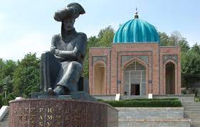
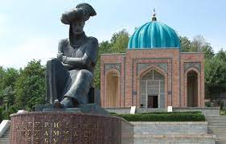
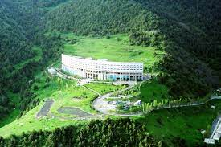
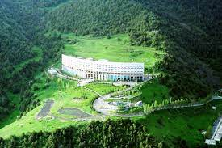

O'zbekiston Respublikasi |
|
| Toshkent shahri |
O'zbekiston
|
| Andijon viloyati | |
| Buxoro viloyati | |
| Farg'ona viloyati | |
| Jizzax viloyati | |
| Namangan viloyati | |
| Navoiy viloyati | |
| Qashqadaryo viloyati | |
| Qoraqalpog'iston Respublikasi | |
| Samarqand viloyati | |
| Sirdaryo viloyati | |
| Surxondaryo viloyati | |
| Toshkent viloyati | |

Toshkent shahri — Oʻzbekistonning poytaxti va eng yirik shahri boʻlib, aholisi boʻyicha Markaziy Osiyodagi eng yirik qadimiy shaharlardan biri hisoblanadi. Oʻzbekistonning shimoli-sharqiy qismida, Qozogʻiston bilan chegaraga yaqin qismda joylashgan boʻlib, maydoni 334,8 km2 (129.3 2) ni tashkil etadi. 2021-yilgi maʼlumotlarga koʻra, Toshkent aholisi 2 694 400 nafar kishini (Oʻzbekiston aholisining qariyb 8 foizi) tashkil etadi[1]. 2018-yilgi maʼlumotlarga koʻra, Toshkent shahrining YIMi $2,74 milliardni tashkil etadi va bu koʻrsatkich Oʻzbekistondagi eng katta YIMga ega shahar boʻlib kelmoqda[4][5]. Milodiy VIII asr oʻrtalarida islomiy taʼsir boshlangunga qadar, Toshkentga sugʻd va turkiy madaniyat taʼsir koʻrsatgan. 1219-yilda Chingizxon Toshkentni vayron qilganidan soʻng, shahar qayta tiklandi va Buyuk Ipak yoʻlidan foyda koʻrdi. XVI-XVII asrlarda Toshkent Shayboniylar va Ashtarxoniylar davlati tarkibida bo'lgan. XVIII—XIX asrlardan boshlab ushbu shahar Qoʻqon xonligi tomonidan zabt etilgunga qadar, mustaqil shahar-davlatga aylangan edi. 1865-yilda Toshkent Rossiya imperiyasi tarkibiga kirdi hamda Turkiston general-gubernatorligi markazi boʻldi. Sovet davrida bu shahar butun Sovet Ittifoqining majburiy deportatsiyasi tufayli katta oʻsish va demografik oʻzgarishlarga guvoh boʻlgan. 1966-yilda boʻlgan Toshkent zilzilasi tufayli Toshkentning katta qismi vayron boʻlgan edi, biroq u namunali Sovet shahri oʻlaroq qayta qurilgan. Oʻsha paytda Toshkent Sovet Ittifoqining Moskva, Leningrad va Kiyev shaharlaridan keyin turadigan toʻrtinchi yirik shahar boʻlgan[6]. Hozirgi kunda, mustaqil Oʻzbekiston poytaxti sifatida, Toshkentda koʻp millatli aholi saqlanib qolgan, ular orasida etnik oʻzbeklar va qozoqlar koʻpchilikni tashkil qiladi. 2009-yilda Toshkentning 2 200 yilligi nishonlandi. Bu munosabat bilan shahar infra va transport tizimi yangilandi[7][8]. Toshkent yirik shahar Etimologiyasi Toshkent 2200-yildan ortiq tarixga ega[9]. Bu davr ichida u mudofaa devori bilan oʻralgan qalʼadan jahondagi yirik shaharlardan biri, Oʻzbekiston Respublikasining poytaxtigacha boʻlgan yoʻlni bosib oʻtdi. Asrlar davomida shahar oʻzining tinch hayotidagi muhim voqealarni va suronli jangu jadallarni, yuksalish va inqiroz davrlarini boshidan kechirdi. Necha bor shahar vayron boʻlib, qayta qad koʻtardi. Toshkent oʻrnidan necha bor siljib, nomi xam bir necha marta oʻzgardi. Xoja Ahror Valiy, Shayx Umar Bogʻistoniy, Abu Bakr Shoshiy, Abu Sulaymon Banokatiy, Hofiz Koʻhakiy kabi buyuk allomalar shu hududda yashab, ijod etganlar. Shahar sifatida Toshkent haqidagi birinchi maʼlumotlar eramizdan avvalgi II asrdagi qadimgi-sharqiy manbalarda uchraydi; Xitoy manbalarida Yuni deb atalgan; Fors shohi Shоpur I eramizdan avvalgi 262-yildagi „Zardusht Kaʼbasi“ qaydnomalarida Toshkent vohasi Choch deb nomlangan. Choch — oltin eksporti, qimmatbaho toshlar, shirinliklar va aslzot otlarni boshqa shahar va mamlakatlarga olib oʻtishdagi yoʻlning chorrahasida joylashgan. „Tosh shahar“ maʼnosini anglatuvchi bugungi Toshkent — zamonaviy respublikaning poytaxti, oʻtmish maʼlumotlarini saqlovchi, Oʻzbekiston tarixi haqida koʻp maʼlumotlarni xotirlovchi, 2 milliondan ortiq aholisi boʻlgan bu shahar Markaziy Osiyoning eng katta industrial markazlaridan biridir.[manba kerak] Toshkentning uzoq oʻtmishi va u qad koʻtargan qadimgi Choch yoki Shosh viloyati haqidagi maʼlumotlar yozma manbalarda xilma-xil hamda uzuq-yuluq tarzda aks etgan. Zardushtiylarning qadimgi muqaddas kitobi Avesmona Sirdaryo havzasidagi mamlakat „Turon“, aholisi esa „tur“lar deb yuritilgan. Bu oʻlkada tur qavmlari urugʻ va qabila oqsoqollarining diniy va siyosiy qarorgohi — Qangʻxa (Qangʻa) shahri borligi tilga olinadi. Toshkent haqidagi dastlabki aniqroq maʼlumotlar miloddan avvalgi 2-asr — milodiy 5-asrlarga mansub Xitoy manbalarida uchraydi. Ularda Toshkent viloyati qadimda Loyuyeni, Yuni, soʻngra Chjeshe, Chjechji, Chjesi va Shi deb nomlangan. Bu atamalar (avvalgi ikkitasidan tashqari) „Choch“ soʻzining xitoycha talaffuz etilishi natijasida hosil boʻlib, hatto oxirgi „Shi“ toponimi xitoychada „tosh“ maʼnosini anglatgan. Miloddan avvalgi 3-asrda qadimgi Choch viloyatida tashkil topib, milodning 3-asrlarigacha hukm surgan „Qangʻ“ („Qangʻa“ yoki „Qangʻxa“) davlati Xitoy yozma manbalarida „Kangkiya“ („Kanizyuy“) nomlari bilan tilga olinadi. Qadimgi toxarlar tilida „qangʻ“ soʻzi ham „tosh“ maʼnosini anglatgan. Bu davlatning poytaxti — Bityan shahri boʻlib, u Iosha-Xasart daryosi (Sirdaryo) boʻyida joylashgan. Bityan shahri Davan (Fargʻona vodiysi)dan 1510 li (528 km) masofada boʻlgan. Bityan shahrining bizgacha saqlanib qolgan xarobalari mahalliy aholi oʻrtasida „Qanqatepa“ nomi bilan mashhur. U Toshkentdan 70 km janubda — Sirdaryoga yaqin yerda, Ohangaron daryosining qurib qolgan qadimgi oʻzani boʻyida joylashgan. Arxeologik maʼlumotlardan maʼlum boʻlishicha, Qanqatepa miloddan avvalgi 3-asrdayoq atrofi mudofaa devori bilan oʻralgan hamda arkli katta shahar boʻlib, maydoni 160 gektarga teng boʻlgan. Qadimgi Qangʻ davlatining fuqarolari ham „qangʻar“, „qanzar“, keyinchalik „qanhi“, „qangʻli“ yoki „qaʼni“ deb nomlangan. Ular (qanqalar) hindlarning qadimgi kitobi „Mahabharata“da saklar va toxarlar nomlari qatorida tilga olingan. Yozma manbalarda keltirilishicha, Toshkentning qadimgi nomi „Choch“ boʻlgan. Toshkent arablar tasarrufiga oʻtgach, arab alifbosida „ch“ harfining yoʻqligi bois arabiy asarlarda „Shosh“ deb yuritilgan. Ilk oʻrta asrlarda u „Choch“, „Shosh“, „Shoshkent“, „Madinat ash Shosh“, „Binkat“ va „Tarkan“ deb nomlangan. Toshkent haqidagi dastlabki maʼlumotlar mahalliy olimlar (Xorazmiy) va tarixchi geograflardan Tabariy, Istahriy asarlarida uchraydi. Istahriyning „Kitob al masolik val mamolik“ („Yoʻllar va mamlakatlar toʻgʻrisidagi kitob“)ida Shoshning bosh shahri Binkat deb koʻrsatiladi. 10-asrda yozilgan (muallifi nomaʼlum) „Hudud ul Olam“ („Olamning chegaralari“) kitobida „Choch bu katta viloyat, xalqi jangovar va sahiydir. U yerda kamon va oʻqyoy yasaladi. Binkat Chochning poytaxti hisoblanadi. Bu katta shahar, ayni vaqtda podshoning qarorgohidir“, deb taʼriflanadi. Firdavsiyning „Shohnoma“ asarida Choch oʻzining kamoni Shoshiy (oʻqyoylari) bilan mashhurligi haqida misralar bor.
Shahar „Toshkent“ nomi bilan dastavval 11-asrning mashhur allomalari — Abu Rayhon Beruniy va Mahmud Qoshgʻariyning asarlarida tilga olinadi. Beruniy „Hindiston“ asarida Toshkent nomining kelib chiqishi toʻgʻrisida soʻz yuritib, „Tosh“ soʻzi asli turkcha boʻlib, Shosh koʻrinishini olgan. „Toshkand — toshli qishloq demakdir“, deb izohlaydi. Mahmud Qoshgʻariyning maʼlumoti boʻyicha, Toshkent 11-12-asrlarda „Tarkan“ deb ham yuritilgan. Zahiriddin Muhammad Bobur „Boburnoma“da Toshkent nomi ustida toʻxtalib, asarlarda Toshkent nomini Shosh, baʼzan Choch yozadilar" deb qayd etadi. Biroq 16-asr oxiri va 17-asr boshlarida Toshkent toponimi shuhrat topib, uning qadimgi Choch, Shosh va Binkat nomlari asta-sekin muomaladan tushib qoldi. 17-asrda yashagan tarixchi olim Mahmud ibn Vali shunday yozadi: „Shosh — Sayxun (Sirdaryo)ning u tomoniga joylashgan shahar va Turkiston (viloyat)ga qaraydi… Uni Choch ataydilar. Biroq hozirgi vaqtda u Toshkent nomi bilan mashhurdir“. Toshkent vohasida shahar madaniyatining shaqllanib, shaharning qad koʻtarishi shu oʻlkada yashagan qadimgi chorvador va dehqonlarning ijtimoiy-iqtisodiy va madaniy hayotidagi ulkan tarixiy jarayon boʻlib, bu jarayon shubhasiz oʻlkaning oʻzlashtirilib, obod etilishi, ayniqsa, unda chorvachilik va dehqonchilik xoʻjaliklarining tashkil topishi hamda hunarmandchilik, ichki va tashqi savdoning rivojlanish tarixi bilan uzviy bogʻliqdir. Bu jarayonning tarixiy manzarasi nihoyatda keng boʻlib, u yozma manbalarga nisbatan koʻproq arxeologik tadqiqotlar vositasi bilan tiklanmoqda. Shuning uchun ham Toshkent hududida olib borilgan arxeologik tadqiqotlarning natijalari qadimgi va oʻrta asrlarga oid manbalardagi maʼlumotlarni toʻldirib, ularga aniqlik kiritmoqda.
1867-yilda Toshkent Turkiston general-gubernatorligining markaziga aylandi. 1930-yildan 1991-yilgacha Toshkent Oʻzbekiston SSR poytaxti boʻlgan. Geografik joylashishi Toshkent vohasi Tyan-Shanning gʻarbiy yonbagʻirlaridan boshlanib Sirdaryo etaklariga tushadigan keng togʻoldi tekisligining bir qismida joylashgan. Sharqda u uchta — Ugom, Piskom va Chatqol togʻ tizmalari bilan oʻralgan boʻlib, bu tizmalarni shu nomlar bilan ataluvchi daryolar oqib oʻtuvchi daralar ajratib turadi. Bu daryolar qoʻshilib Chirchiq daryosini hosil kiladi. Chirchiq daryosi Chorvoq havzasining tor darasidan oʻtib, Gʻazalkentdan quyiroqqa tushganda kengligi baʼzi joylarda 20 kmdan oshadigan qadimiy tekislik boʻylab oqadi. Gʻarbda Chirchiq vodiysiga Qizilqumning qaynoq nafasi uriladi. Bu qayirning bir qismini Chirchiq daryosining hozirgi oʻzani egallagan. Janubiy qismida esa vodiyga kirib boruvchi Ohangaron daryosi yastangan. Ushbu tekislik shimolida joylashgan Aris daryosining vodiysi bilan birga bu tabiiy suv tarmoqlari Oʻrta Osiyo dehqonchilik vohalarining chekka mintaqasini tashkil etadi. Undan shimol tomonga qarab esa, yaylovlarga boy boʻlgan poyonsiz choʻl yastanib yotadi. Chirchiq daryosi havzasi Oʻrta Osiyoning qadimiy dehqonchilik va shahar madaniyatlari beshiklaridan biridir. Uning hududida Toshkentning markazi paydo boʻlgan. Joydan joyga koʻchib turgan bu markaz qadimda va oʻrta asrlarda Choch yoki Shosh, keyin esa Toshkent nomi bilan mashhur boʻlgan. Toshkent vohasida barcha tarixiy davrlarda suv moʻl-koʻl boʻlgan. Tarixan tarkib topgan kanallar tarmogʻi shaharni suv bilan taʼminlab turgan. Shu bois shahar xech qachon suv taqchilligini sezmagan. Buni oʻrta asrlardan to XIX asrgacha Toshkent toʻgʻrisida yozgan mualliflar xamisha taʼkidlab kelganlar. Bu yerdagi iqlim hozirgi odamlarning ajdodlari paydo boʻlgan, yaʼni bir necha oʻn ming yil muqaddam mavjud boʻlgan iqlimdan farq qilgan. Issiq quruq yoz bilan yillik yogʻin miqdorining asosiy qismi yogʻadigan qahraton qish almashinib turgan. Toshkentning togʻ yonbagʻirlari va tekisliklar oʻsimliklarga boy boʻlib, ibtidoiy odamlar ovlaydigan yovvoyi hayvonlar juda koʻp boʻlgan. Ularning aksariyati, jumladan, arxar, jayron, qulon va asl bugʻu kabi hayvonlar yaqin vaqtda yoʻqolib bitgan boʻlsa, junli karkidon, gʻor ayigʻi, arslon singari hayvonlar esa ancha ilgari yoʻqolib ketgan. Ular haqida ibtidoiy odamlar manzillarini qazib oʻrganish chogʻida topilgan qoldiqlar orqali maʼlumot olish mumkin. Bu yerlarda bir necha yuz ming yil avval ovchilik va termachilik bilan kun kechiruvchi ibtidoiy jamoalar gʻorlar va togʻ bagʻri bostirmalarini, yoki daryo sohillari va chashmalar yonidagi ochiq manzillarni egallab makon qilganlar. Bunday joylar hozirgi Toshkent shahri hududida ham mavjud boʻlgan. Jumladan, Boʻz suv yoqasidagi Qoʻshilish manzilgohidan birmuncha nozik ishlangan chaqmoqtoshlar, pichoqlar, bigizlar, ibtidoiy ustalar tomonidan bundan toʻqqiz ming yil avval yasalgan ov va mehnat qurollari topildi. Topilmalar orasidan yovvoyi buqa tur suaklarining uchrashi, mutaxassislar fikricha, ularning oʻsha vaqtlardayoq xonakilashtirilgan deb taxmin qilishga asos boʻldi. Hayvonlarni xonakilashtirish jarayoni Toshkent vohasi hududida ham kechgan. Miloddan oldingi uchinchi ming yillikdan boshlab, bu hudud dastlabki chorvadorlar tomonidan oʻzlashtira boshlashgan. Ular ish asboblari va jezdan qurollar tayyorlashni oʻrganganlar. Arxeologlar Toshkent shahri hududi va uning atrofida chorvadorning koʻpdan koʻp qabrlari hamda qoʻrgʻonli dahmalarini topganlar. Bu joylarda dafn etilganlarning yoniga jezdan yasalgan ish asboblari, qurollar, zeb-ziynatlar va qoʻlda yasalgan idishlar ham qoʻyilgan. Toshkent shahri hududida bunday qabristonlar hozirgi shampan vinosi zavodi yaqinidan, shuningdek, Qoraqamish arigʻi boʻyidan topilgan. Sirgʻalida esa dasht chorvadorlari va yilqichilarining manzili boʻlganligi aniqlangan. Bu yerdan ish qurollaridan tashqari burama halqali jez bilaguzuklar ham topilgan.[10
 

Andijon viloyati — Oʻzbekiston Respublikasi tarkibidagi viloyat. Fargʻona vodiysining sharqiy qismida. 1941-yil 6-martda tashkil etilgan. Maydoni 4,2 ming km². Aholisi 3 253 501 kishi (2022-yil 1-yanvar holatiga). Andijon viloyatida 14 qishloq tuman, 11 shahar va 95 qishloq fuqarolari yigʻini bor (2000). Markazi — Andijon shahri.[2] Tabiati Andijon viloyati yer yuzasi asosan tekislik. Hozirgi relyefi va yer yuzasidagi jinslar toʻrtlamchi geologik davrning katta-kichik daryolari va irmoqlarining faoliyatidan hosil boʻlgan. Viloyatning gʻarbiy qismi qirli tekislik (bal. 400-500 m), sharqi (Andijon shahridan sharda) Fargʻona va Oloy tizmalarining tarmoqlaridan iborat. Andijon viloyati geologik aktiv zonada joylashgan, kuchli zilzilalar boʻlib turadi (qarang Andijon zilzilasi). Iqlimi keskin kontinental, quruq. Togʻ tizmalari Fargʻona vodiysini sovuq havoning kirib kelishidan toʻsib turganligi uchun qishda Andijon viloyatida ob-havo birmuncha barqaror. Yozi issiq, iyulning oʻrtacha temperaturasi 27,3°, qishi nisbatan sovuq, yanvarning oʻrtacha temperaturasi −3°. Vegetatsiya davri 217 kun. Yiliga 200 — 250 mm yogʻin tushadi. Av. Oʻzbekistonning boshqa viloyatlariga nisbatan suv resurslariga boy. Daryolari yogʻindan, togʻlardagi koʻp yillik qor va muzliklardan suv oladi. Asosiy daryosi — Qoradaryo (Sirdaryo irmoqlaridan biri). Uning irmoqlari — Moylisuv, Oqboʻra, Aravonsoy va boshqa Av. daryolarining suvi sugʻorish uchun ishlatiladi. Tuproqlari boʻz, qoʻngʻir, oʻtloqi, oʻtloqi-botqoq tuproqlar, qumtosh, mergel, less va chaqirtoshlardan iborat. Bahorda adirlar efemer oʻsimliklar bilan qoplanadi. Av.ning ekin ekilmaydigan tekislik qismida shuvoq-shoʻra oʻsimliklari, togʻ yon bagʻirlarida pista, bodom oʻsadi. Yovvoyi hayvonlar (buri, tulki, qobon va boshqalar) kam uchraydi; sudraluvchilar, kemiruvchilar, qushlar, suv havzalarida baliqlar bor. Aholisining koʻpchiligini oʻzbeklar tashkil etadi. Qirgʻizlar, Tojiklar, Uygʻurlar, Ruslar, Koreyslar, Qangli va boshqalar ham bor. Rossiya Qoʻqon xonligini bosib olgach, bu yerga rus, ukrain, tatar, arman, yahudiy va boshqa millat vakillari koʻchib kelgan. 1 km² ga oʻrtacha 517 kishi toʻgʻri keladi. Milliy tarkibi: oʻzbeklar — 86,8 %, qirgʻizlar 3,8 %, tatarlar 3,1 %, Qanglilar 2%, ruslar 2 %. Shaharliklar 657,7 ming kishi, qishloq aholisi 1539,2 ming kishi (2000). Sanoati Viloyatda foydali qazilmalarni qazib chiqarish, paxtachilik shundayligicha xom ashyo sifatida metropoliyam joʻnatilar edi. 1907-yil yarim hunarmandchilikka asoslangan yogʻ zavodi qurildi. Dastlab bu zavod bir kecha-kunduzda 50 t chigitni qayta ishlab, 8 t ga yaqin yogʻ chiqarar edi. 1954-yilda zavod yogʻ-moy kombinatiga aylantirildi. 1960-70 yillarda Andijon shahrida „Elektrodvigatel“, „Elektroapparat“ kabi yirik korxonalar, Marhamatda esa „Elektrotexnika“ zavodi qurildi. 1941-yil Andijon shahrida motorsozlik zavodi ishga tushirildi. Mustaqillik yillarida viloyat industriyasi oʻz yoʻnalishini oʻzgartirib, tubdan rivojlanmoqda. Mavjud korxonalar davlat tasarrufidan chiqarilib, mulkchilikning oʻzgacha shakliga kirib bormoqda. Xususan aksariyat yirik va oʻrta korxonalar negizida aksiyadorlik jamiyatlari tashkil etildi. Viloyatda mulkchilikning barcha turiga oid 160 sanoat korxonasi bor (2000). Bulardan yiriklari: Bobur nomidagi ip-gazlama ishlab chiqarish aksiyadorlik jamiyati (Andijon shahrida; tumanlarda boʻlimlari bor), „Andijon agrofirmasi“ aksiyadorlikjamiyati, Andijon avtomobil oʻrindiqlari zavodi, Andijon biokimyo zavodi, Andijon irrigatsiya mashinasozlik zavodi, Andijon „Semurgʻ“ trikotaj aksiyadorlik birlashmasi, Andijon don mahsulotlari" aksiyadorlik jamiyati, „Andijonkabel aksiyadorlik jamiyati“, Chinobod paxta tozalash aksiyadorlik jamiyati. 1991-2000-yillar davomida Andijon viloyatida jahon andozasi darajasidagi mahsulotlar ishlab chiqaruvchi zamonaviy qoʻshma korxonalar bunyod qilindi. Viloyatda 79 qoʻshma korxona, 8447 kichik va xususiy korxona mavjud. Viloyatdagi qoʻshma korxonalar butun viloyat yalpi sanoat mahsulotining 53 %dan koʻprogʻini ishlab chiqarmokda (2000). Oʻrta Osiyoda yagona avtomobilsozlik korxonasi — Oʻzbek-Janubiy Koreya „OʻzDEU avto“ kompaniyasi Asaka shahrida joylashgan. Italiyaning „Aka-uka Federichi“ aksiyadorlik jamiyati bilan hamkorlikda Asakada barpo etilgan Oʻzbek-Italiya „FAM“ qoʻshma korxonasi soatiga turiga qarab 1-1,5 t makaron ishlab chiqarish quvvatiga ega. Shahrixon tumanidagi Segazaqum qishlogʻida kalava ip tayyorlaydigan va kelgusida undan gazlama toʻqiydigan „ANTEKS“ ochiq turdagi aksiyadorlik jamiyati korxonasi barpo etildi va irrigatsiya bilan bogʻliq boʻlgan tarmoklar, paxtani qayta ishlash, mashinasozlik va metallsozlik, elektrotexnika sanoatlari, qurilish materiallari ishlab chiqarish, kimyo, yengil (ip-gazlama, paypoq fabrikalari va boshqalar), oziq-ovqat sanoati eng rivojlangan tarmoklardir. Viloyat mamlakatda neft va gaz qazib chiqarishda salmoqli oʻrin tutadi. Oʻnga yaqin neft va neft-gaz konlari (Andijon neft koni, „Xoʻjaobod“, „Boʻston“, „Janubiy Olamushuk“, „Xartum“, „Polvontosh“, „Xoʻjausmon“ va boshqalar) ishlab turibdi. Xoʻjaobod — Andijon — Asaka gaz quvuri bor. Andijon viloyatida dastlabki paxta tozalash zavodlari Andijon shahrida 1911-yilda, Asakada 1912-yilda, Shahrixonda 1915-yilda qurilgan. Sanoatning bu turi paxta yetishtirishga qarab tez rivojlandi. 1924-yil paxta zavodlarida 25 ming t xom ashyo qayta ishlangan edi. 1999-yilda mavjud 13 ta paxta qayta ishlash korxonalarida 325 ming tdan ziyod paxta qayta ishlandi. Viloyatda yetishtirilayotgan pilla, jun, teri umuman qayta ishlanmasdan, lanib, 1999-yil oktabr ida ishga tushirildi). Baliqchi tumani notoʻqima matolar ishlab chiqarish yopiq turdagi aksiyadorlik jamiyati shaklidagi Oʻzbek — Amerika qoʻshma korxonasi ham oʻz mahsulotlari bilan chet elda eʼtibor qozongan korxonalardandir. Qoʻshma korxona zamonaviy uskunalar bilan qayta jihozlandi. Kalava ip va xom gazlama tayyorlanadigan mazkur korxonada 1300dan ortiq ishchi ishlaydi (2000). Shuningdek, viloyatda rivojlangan mamlakatlarning sarmoyalari jalb qilingan „Andijon-Praga“, „Andijon durdonasi“, „Navigul“, „Oʻz-Koromko“, Oʻzbek-Rus-Britaniya „Mask“, „Al-Osiyo“ qoʻshma korxonalari va Oʻzbek-Amerika qoʻshma korxonasi filiali bor.
Qishloq xoʻjaligi Viloyat qishloq xoʻjaligining asosiy tarmogʻi — paxtachilikdir. Paxtaning yalpi hosili va hosildorligi jihatidan Andijon viloyati mamlakatda oldingi oʻrinlarda turadi. Ayniqsa mustaqillikdan keyin paxtakorga erkinlik berilgach, paxtachilikda tub oʻzgarishlar sodir boʻldi. 1997-yildan chigitni keng maydonlarda plyonka ostiga ekish texnologiyasi joriy etildi (mazkur texnologiyani qoʻllashda viloyat hokimi, Oʻzbekiston Qahramoni Qobiljon Obidov katta jonbozlik koʻrsatdi). Paxta, gʻalla almashlab ekilishi yoʻlga qoʻyildi. Faqat mineral oʻgʻitlarga qarab qolmasdan mahalliy oʻgʻitlardan ham foydalanildi. Xususan gidroliz zavodining chiqindilaridan kompost tayyorlab, tuproq unumdorligini oshirishga ahamiyat berildi; ekin qator oralariga ammiak suvi oqizish oʻzlashtirildi. Gʻoʻza navlarini tuproq va iqlim sharoitiga koʻra tanlashga eʼtibor berildi. Har yili katta maydonlarda paxtaning „Oqdaryo“, „Armugʻon“, „Fargʻona-5“ singari istiqbolli navlari sinab koʻrildi va muntazam yangilanib borildi. Keyingi yillarda sinovdan oʻtib, ertapishar, tolasi pishiq, chigiti toʻla, kasalliklarga chidamliligiga ishonch hosil qilingan „Okdaryo“ navi koʻproq ekildi. Natijada mamlakatning boshqa viloyatlariga qaraganda gʻoʻza Andijon viloyatida barvaqt yetilmoqda. Sentabr oyiga qadar hosilning asosiy qismi yigʻib olinmoqda va yuqori navlarga oʻtkazilmoqda. 2000-yilda Oltinkoʻl tumanidagi „Ittifoq“ jamoa xoʻjaligida gektaridan oʻrtacha 45,7 s, Asaka tumanidagi „Yangi hayot“ jamoa xoʻjaligida 48,4 s atrofida hosil olindi. Shahrixon tumanidagi Gʻ. Joʻrayev nomidagi jamoa xoʻjaligining fermeri N. Toshmatov 60 sdan xirmon uydi. Andijon viloyatida 2000-yilda sentabr oyidayoq 305 ming tdan ziyod paxta tayyorlanib, shartnoma rejasi mamlakatda birinchi boʻlib bajarildi. Gʻallachilikda ham „Andijon maktabi“ yaratildi. Don 3 barobar koʻpayib, hosildorlik 1,2-marta oshdi. 2000-yilda gʻalla hosildorligi moʻljaldagi 70,8 sdan oshib ketdi. Marhamat tumanining Ulugʻtogʻ adirlarida Oxunboboyev nomidagi jamoa xoʻjaligining ijarachisi Muhammadsharif Toshpoʻlatov 67 s dan, Baliqchidagi Xayrixon Ergasheva nomidagi shirkat xoʻjaligida ijarachilardan Erkinboy Shukurov, Alijon Komilov, Turobjon Hakimov 85 sdan don olishdi. Shahrixon tumanidagi „Oltin vodiy“ jamoa xoʻjaligi gʻallachilik brigadasi boshligʻi Oʻzbekiston Qahramoni Sodiqjon Abdurasulov uzoq yillar davomida donchilikda va paxtachilikda yuqori koʻrsatkichlarga erishdi. U Andijon viloyatida boshqa mintaqalardan keltirilgan yangi bugʻdoy navlarini sinash va ulardan moʻl hosil olish boʻyicha tajriba maktabi yaratdi. 2000-yil hosili uchun viloyatda 74 ming ga maydonga elita va superelita urugʻlari ekildi. Kuzgi bugʻdoyning istiqbolli „Andijon-1“, „Andijon-2“, „Chillaki“ navlari sinab koʻrilib, ularning parvarish tartibi aniqlab chiqildi. Keyingi yillarda boshqa viloyatlarda ham andijonliklar yaratgan yangi navlar keng ekilmoqda. 2000-yilda davlatga 250 ming t ga yaqin gʻalla topshirildi. Uning 150 ming t sidan ziyodini sara urugʻlik tashkil etadi. Gʻallachilik 1999-yilda Andijon viloyatiga 9,3 mlrd. soʻmdan ortiq daromad keltirdi. (1994-yil yanvarda bosh Asaka avtomobil zavodidan chiqqan yangi avtomobillar. Oʻzbekiston Respublikasi Prezidenti Islom Karimov Asaka avtomobil zavodila, 1996-yil 19-iyul. Qishloq xoʻjalikda, shuningdek bogʻdorchilik, tokchilik, sabzavotchilik, don va chorvachilik mahsulotlari yetishtirish bilan ham shugʻullaniladi. Bogʻdorchilikda Andijon viloyati anor, anjir, bodom, behi, nok, shaftoli, olma, uzum yetishtirish bilan ayniqsa mashhur. Viloyatda aholi soni koʻpligi sababli adirlarda bogʻlar yaratishga katta ahamiyat berilgan. Shunday bogʻlardan eng mashhuri „Sohibkor“ meva-tokchilik ishlab chiqarish shirkatlar uyushmasi bogʻidir. Mazkur bogʻ 1981-yilda, Asaka tumanidagi Fayziobod qishlogʻidan 3-4 km narida Asaka adirlarining suvsiz qovjirab yotgan yerlari bagʻrida pastdan quvur orqali suv chiqaribyara-tilgan. Bogʻning barpo etilishi Oʻzbekistonda xizmat koʻrsatgan qishloq xoʻjalik xodimi Tilavoldi Yoqubov nomi bilan bogʻliq. Andijon viloyati bogʻlarida mevali daraxtlardan tashqari toknint Andijon kora uzu mi navi keng ekiladi. Qishloq xujalikda foydaniladigan yerlar maydoni tomorqa yerlarini qoʻshgan holda 256,7 ming ga. Qishloq xujalik ekinlari ekiladigan jami yerlari 257,6 ming ga, shu jumladan haydaladigan yer 200,9 ming ga, yaylovlar 21,7 ming ga (2000). Barcha ekin maydoni 202,5 ming ga, shu jumladan don ekinlari 82,5 ming ga, paxta ekiladigan yer PO ming ga, kartoshka, sabzavot-poliz ekinlari 4,9 ming ga, ozuqa ekinlari 16,1 ming ga, 3500 ga oʻrmonzor bor (2000). Grechixa va soya ham yetishtirilmoqda. Umuman viloyatda mirishkor dehqon yil davomida 2-3-martadan hosil olmokla. Andijon viloyatida Usmon Yusupov nomidagi Katta Fargʻona, Janubiy Fargʻona, Katta Andijon, Savay, Andijonsoy, Shah-rixonsoy va boshqa kanallar bor. Adir zonalaridagi dalalarga suv nasos stansiyalari yordamida chiqariladi. Qoradaryoda Andijon suv ombori barpo qilingan. Yerning meliorativ holatini yaxshilash maqsadida 7,8 ming km kollektor-drenaj tarmokdari qurilgan. Viloyatning hamma tumanlaridagi sugʻoriladigan maydonning asosiy qismida paxta va don ekiladi. Andijon viloyatida 13 jamoa xoʻjaligi, 6 davlat xoʻjaligi, 13 xoʻjaliklararo korxona, 133 shirkat xoʻjaligi, 36 boshqa xoʻjalik, 2724 fermer xoʻjaligi mavjud. Jamoa xoʻjaliklarida chorvachilik asosan sut yetishtirishga ixtisoslashgan, togʻ oldi va togʻli tumanlarda qoʻychilik rivojlangan. 95 ming qoramol, 56 ming sigir, 65 ming qoʻy va echki, 190,2 ming parranda bor

Buxoro viloyati — Oʻzbekiston Respublikasining 12 viloyatlaridan biri. Oʻzbekiston viloyatlari ichida chegarasining kattaligi boʻyicha Navoiydan keyin ikkinchi oʻrinda turadi. 1938-yil 15-yanvarda tashkil etilgan. Buxoro viloyati hududi asosan Qizilqum choʻlida joylashgan. Janubi-sharqini Zarafshon vodiysi egallagan. Shimoli-gʻarbda Xorazm viloyati va Qoraqalpogʻiston Respublikasi, shimol va sharqdan Navoiy viloyati, janubi-sharqda Qashqadaryo viloyati, janubi-gʻarbda Turkmaniston bilan chegaradosh. Maydoni 39,4 ming km2. Aholisi 2.000.255 kishi[1] (2022). Buxoro viloyati tarkibida 11 qishloq tumani: Buxoro, Vobkent, Jondor, Kogon, Olot, Peshkoʻ, Romitan, Shofirkon, Qorovulbozor, Qorakoʻl, Gʻijduvon, 11 shahar (Buxoro, Galaosiyo, Vobkent, Gazli, Kogon, Olot, Romitan, Shofirkon, Qorakoʻl, Qorovulbozor, Gʻijduvon), 3 shaharcha (Jondor, Zafarobod, Yangibozor), 121 qishloq fuqarolar yigʻini bor. Buxoro viloyati aholisining etnik tarkibi asosan oʻzbek, rus, fors (eroniylar), turkman, tojik, ukrain, koreys, tatar va boshqalar tashkil etadi. Markazi - Buxoro shahri. Tabiati Buxoro viloyati hududining relyefi aksariyat geomorfologik xususiyatlariga koʻra birmuncha murakkab tekisliklardan iborat. Eng baland joyi Quljuqtov tizmasi. Quljuqtov bilan Zarafshon daryosi vodiysi oraligʻida Oyoqogʻitma botigʻi joylashgan. Buxoro viloyatida quyidagi relyef koʻrinishlarini ajratish mumkin: Alohida ifodalangan past togʻlar, platolar (Quljuqtov, Tuzkoy togʻi, Jarqoq, Saritosh); Tekis yuzali plato va qirlar (Qorakoʻl, Dengizkoʻl, Uchbosh, Qoraqir); Daryo va koʻl yotqiziqlari bilan qoplangan va shamol taʼsirida vujudga kelgan akkumulyativ tekisliklar; Alohida ifodalangan berk botiqlar (Qoraxotin, Oyoqogʻitma, Dengizkoʻl); Yassi yuzali vohalarda balandligi 5-15 m li tepalar uchraydi. Togʻlar asosan silur, devon, toshkoʻmir, boʻr, paleogen, neogen davrlari jinslaridan tuzilgan. Tekislik va qumliklar toʻrtlamchi geologik davr tabiiy omillari taʼsirida oʻzgargan. Foydali qazilmalardan Setalantepa, Jarqoq, Gazli, Uchqirda gaz, Kemachi, Zikri, Oʻrtabuloqda neft-gaz hamda grafit konlari, ohaktosh, bentonit (gilmoya), granit konlari topilgan. Buxoro viloyatida juda koʻp mineral suv zaxiralari aniqlangan. Quljuqtov, Qoraxotin, Jingʻildi, Oyoqogʻitma botigʻi atroflaridan topilgan suvlardan xoʻjalikda qisman foydalaniladi. Viloyat seysmik jihatdan 7 balli, faqat Gazli shahri atrofi 9 balli zilzila zonasiga kiradi. Iqlimi keskin kontinental: yozi issiq, uzoq, quruq; iyulning oʻrtacha harorati 28-32°, qumliklarda 60-70° gacha koʻtariladi. Yanvarning oʻrtacha harorati 0° dan −2° gacha yiliga 90-150 mm yogʻin tushadi. Asosan bahor va qishda yogʻadi. Vegetatsiya davri 220 kun. Buxoro viloyatining asosiy suv manbai — Amu-Buxoro mashina kanali. Quyimozor, Toʻdakoʻl, Shoʻrkul suv omborlarining ahamiyati katta. Bundan tashqari vohalar atrofida zovur va oqova suvlar tashlanadigan Dengizkoʻl, Qoraqir, Katta Tuzkon va Devxona kabi koʻllar mavjud. Buxoro viloyati boʻyicha obikor yerlarning 94,4 % turli darajada shoʻrlangan. Choʻl zonasida kam chirindili qoʻngʻir tusli sur, qumli ishgandan soʻng, oziq-ovqat sanoatida tashkiliy va iqtisodiy islohotlar amalga oshirildi.
Hududiy boʻlinishi Boʻlinishi: Olot (1), Buxoro (2), Vobkent (11), Gʻijduvon (3), Jondor (4), Kogon (5), Qorakoʻl (6), Qorovulbozor (7), Peshkun (8), Romitan (9), Shofirkon (10) # Tuman nomi Tuman markazi 1 Olot tumani Olot 2 Buxoro tumani Galaosiyo 3 Gʻijduvon tumani Gʻijduvon 4 Jondor tumani Jondor (shaharcha) 5 Kogon tumani Kogon 6 Qorakoʻl tumani Qorakoʻl (shahar) 7 Qorovulbozor tumani Qorovulbozor 8 Peshku tumani Yangibozor 9 Romitan tumani Romitan 10 Shofirkon tumani Shofirkon 11 Vobkent tumani Vobkent Sanoati Korxonalar ilgʻor texnologiya bilan jihozlandi. Yangi qadoqlash liniyalari, Buxoro, Gʻijduvon, Qorakoʻl, Vobkent shaharlarida Germaniya texnologiyasiga asoslangan non sexlari ishga tushirildi. „Buxoroteks“ aksiyadorlik jamiyatining filiallari Gʻijduvon, Vobkent, Qorakoʻl va Olotda ishlab turibdi. Buxoro pillakashlik fabrikasi va uning filiallarida pilla qayta ishlanmoqda. Buxoro trikotaj kiyimlar fabrikasida erkaklar, ayollar va bolalarning ustki va ichki kiyimlari ishlab chiqariladi. Buxoro tikuvchilik fabrikasi, Buxoro va Gʻijduvon poyabzal fabrikasi, Shofirkonda Turkiya bilan hamkorlikda qurilgan „Vardanzi“ tikuvchilik qoʻshma korxonasi, „Qorakoʻl“ aksiyadorlik jamiyati qoshida Gretsiya bilan hamkorlikda „Omega-Sitora“ qoʻshma korxonasi ishga tushirildi. Mahalliy sanoat korxonalaridan Buxoro „Zardoʻz“ aksiyadorlik jamiyati, Gʻijduvon kulolchilik sexi, Gʻijduvon va Shofirkondagi gilam toʻqish fabrikalari, Kogon paxta titish fabrikasi, Romitan toʻqimachilik fabrikasi, tikuvchilik, kashtadoʻzlik, miskarlik, zargarlik, kosibchilik va 20 dan ortiq gʻisht zavodlari ishlab turibdi. Paxta tayyorlash punktlari, quritish, tozalash sexlari, paxta tozalash zavodlari bor. Paxta tolasi yangi uskuna va texnologiyalar asosida jahon andozalariga muvofiq ishlab chiqarilmoqda. Buxoro uysozlik kombinati, Kogon ohak zavodi, Quyimozor va Kogon yigʻma temirbeton buyumlari zavodlari, Italiya bilan hamkorlikda qurilgan koshinlar ishlab chiqariladigan „Minokor“ zavodi, Buxoro temirbeton zavodi bor. Gazavtomatika ishlab chiqarish birlashmasida qurilish materiallari ishlab chiqariladi. Qishloq xoʻjaligi Buxoro viloyati iqtisodiyotining asosini qishloq xoʻjaligi (paxtachilik, gʻallachilik, sabzavotchilik, bogʻdorchilik, chorvachilik) tashkil etadi. Viloyat dehqonchiligida sugʻoriladigan yerlar (tomorqa yerlar bilan birga) 273,7 ming ga, partov yerlar 14,2 ming ga, choʻl yaylovlari 2764, 6 ming ga, Paxta 129 ming ga, makkajoʻxori 857 ga, donli ekinlar 81,2 ming ga, sholi 200 ga, pomidor 2741 ga, sabzavot-poliz ekinlari 9,3 ming ga, lavlagi 116 ga, kartoshka 2967 ga, yem-xashak ekinlari 15,9 ming ga, shu jumladan, beda 7,1 ming ga, bogʻlar 18,2 ming ga, tutzorlar 5,9 ming ga, Buxoro viloyati da 236 shirkat uyushmasi va jamoa xoʻjaligi, 4162 fermer xoʻjaligi, 41 xoʻjaliklararo korxona, 5 parrandachilik fabrikasi mavjud (2001), Chorvachilik Buxoro viloyatining rivojlangan tarmogʻi boʻlib, qoramolchilik, qoʻychilik, echkichilik, yilqichilik, tuyachilik va parrandachilik rivojlangan. Ayniqsa, Buxoro qorakoʻllari mashhur. Buxoro viloyatining barcha tizimdagi xoʻjaliklarida 428 ming qoramol, shundan 184,7 ming sigir, 750 ming qoʻy, 64 ming echki, 3 ming yilqi, 2,8 ming tuya, 771 ming parranda mavjud (2001). Viloyatda ipak qurti ham boqiladi. 10 ta oʻrmonchilik xoʻjaligi boʻlib, asosiy oʻsimliklari saksovul, cherkez, qandim. Qorakoʻl oʻrmon xoʻjaligida esa dorivor oʻsimliklar ham yetishtiriladi.

Fargʻona viloyati — Oʻzbekiston Respublikasi tarkibidagi viloyat. 1938-yil 15-yanvarda tashkil etilgan. Respublikaning sharqida, Fargʻona vodiysining janubida joylashgan. Shimoldan Namangan, Andijon viloyatlari, janub va sharqdan Qirgʻiziston, gʻarbdan Tojikiston Respublikalari bilan chegaradosh. Maydoni 6,8 ming km2. Aholisi 2020-yilda 3,817,000 kishi. Tarkibida 15 tuman, 4 shahar (, Margʻilon, Fargʻona, Quvasoy, Qoʻqon,), 10 shaharcha, 164 qishloq fuqarolari yigʻini bor (2004). Markazi — Fargʻona shahri. Tarixi Xudoyorxon oʻrdasi Fargʻona darvozasi Fargʻona xalqaro aeroporti Fargʻona viloyati Oʻzbekistonning qadimgi madaniyat oʻchoqlaridan biri. Viloyat hududida topilgan tosh davri manzilgohlari va qoyatoshlariga solingan suratlar vodiyda odamlar eng qadimgi davrlardan beri yashab kelganliklaridan darak beradi. Fargʻona viloyatining tosh davri yodgorliklarini 1954-yil A. P. Okladnikov rahbarligidagi arxeologiya otryadi oʻrgangan. Vodiyning sharqiy qismidagi Qayroqqum, Xoʻjagʻor va Uchqoʻrgʻon makonlaridan mustye davriga oid tosh qurollar topildi. Vodiyning gʻarbiy qismidagi qadimgi tosh davri madaniyatiga oid manzilgohlar mustye davridagi Qalʼacha, Jarqoʻton va Qapchigʻay tosh qurollar ishlash ustaxonalari topilib oʻrganildi. 1958-yil birinchi marta Markaziy Fargʻonadan mezolit davriga oid mikrolit tosh qurollari topildi. Shuningdek, Markaziy Fargʻonadagi Uzunkoʻl va Tayloqkoʻl atroflaridan mezolit va neolit davrlariga oid 24 ta manzilgoh borligi aniqlandi (1965). Soʻx vohasidagi 28 gʻor va ungurlar (Selungur, Eshma, Obishir, Sur, Bel, Zim, Ovikambar, Bogʻishim va boshqalar) roʻyxatga olindi. Obishir gʻorlaridagi madaniy qatlam yaxshi saklangan. Gʻorlarni qazish jarayonida mezolit davriga oid tosh qurollar, xayvon suyaklari topilgan. Bular oʻsha davr turmushini oʻrganish imkonini beradi. 1967 va 1969—70 yillarda Sankt-Peterburgdagi Ermitaj muzeyi xodimlari mezolit va neolit davrlariga oid 35 ta manzilgoh topdilar. Fargʻona viloyatining arxeologik yodgorliklarini oʻrganishda Katta Fargʻona kanalining qazilishi muhim ahamiyatga ega boʻldi. Kanalni qazish jarayonida jez davri, quldorlik va zamindorlik jamiyatlariga oid yodgorliklar topildi va tekshirildi. Quva va Toshloq tumanlari oʻrtasidagi Akbarobod qishlogʻida jez davriga oid manzilgoh, Margʻilonsoyning chap sohilida Oqtom qabristoni boʻlganligi aniqlandi. Fargʻona viloyatining Quva tumanida quldorlik davriga oid Taxyontepa, Fargʻona shahrida Simtepa (Chimtepa) kabi yodgorliklar topib oʻrganilgan. Ayniqsa, Quva shahridagi miloddan avvalgi 5-asr va oʻrta asr boshlariga oid topilmalar yaxshi tekshirilgan. 10-11-asrlarga doir tarixiy manbalarda bu shahar obodligi va kattaligi jihatidan vodiyda Axsikatdan soʻng eng yirik shahar deb qayd qilingan. Arxeologik materiallar Margʻilon shahri 10-asrda katta qishloq boʻlib, 11-12-asrlarda shaharga aylanganligini, Rishton esa 10-asrda katta shahar boʻlsa ham, 11-12 asrlarga kelib qishloq qiyofasiga kirib qolganligini isbotlaydi. Oʻtroq dehqonchilik, chorvachilik bilan shugʻullangan Chust madaniyatiga oid manzilgohlardan topilgan yodgorliklar Fargʻona vodiysini oʻrganishda muhimdir. U yerda ishlab chiqarish kuchlari va xoʻjalikning taraqqiyoti jez davrining oxirida dehqonchilik qabilalarining ijtimoiy tuzumida oʻzgarish yuz berishiga, natijada ibtidoiy tartiblar tugab, jamiyatdagi tabaqalanishga olib kelgan. Roʻzgʻor anjomlarida xususiy mulkchilik kurtaklari koʻzga tashlanadi. Arxeologik tekshirishlar natijasi Fargʻona viloyatida qadimdan odamlar yashab, ovchilik, dehqonchilik, chorvachilik bilan shugʻullanganligidan, kishilik jamiyatining keyingi bosqichlarida esa madaniyat rivojlana boshlaganligidan dalolat beradi.
Hududiy boʻlinishi Fargʻona viloyati hududiy jihatdan 15 ta tuman va 4 ta shaharga boʻlingan. Shaharlar Fargʻona viloyatiga bevosita boʻysunadigan quyidagi 4 ta shahar mavjud: Fargʻona[1] Qoʻqon[2] Margʻilon[3] Quvasoy[4] Tumanlari Fergana districts.png Tuman nomi Tuman markazi 1 Oltiariq tumani Oltiariq 2 Bagʻdod tumani Bagʻdod (shaharcha) 3 Beshariq tumani Beshariq 4 Buvayda tumani Ibrat 5 Dangʻara tumani Dangʻara 6 Fargʻona tumani Vodil 7 Furqat tumani Navbahor (qishloq) 8 Qoʻshtepa tumani Langar (qishloq) 9 Quva tumani Quva 10 Rishton tumani Rishton 11 Soʻx tumani Ravon (qishloq) 12 Toshloq tumani Toshloq 13 Uchkoʻprik tumani Uchkoʻprik 14 Oʻzbekiston tumani Yaypan 15 Yozyovon tumani Yozyovon Tabiati Fargʻona viloyatining shimoliy qismini Qoraqalpoq va Yozyovon dashtlari egallagan, janubdan Olay tizmasidan oqib tushadigan daryolarning yoyilmalari bilan oʻralgan. Janubda adirlar Olay tizmasining togʻ oldilari bilan almashinib turadi. Fargʻona viloyati yuqori seysmik zona hisoblanadi. Iqlimi kontinental. Qishi birmuncha yumshoq, baʼzan havo juda sovib ketadi. Yanvar oyining oʻrtacha harorati — 3,2 °C, iyulniki 28 °C. Eng past harorat —27,9 °C. Eng yuqori harorat 42 °C. Vodiyning gʻarbida esadigan kuchli "Qoʻqon shamoli" iqlimga salbiy taʼsir etadi. Shamolning tezligi sekundiga baʼzan 35-40 metrga yetadi. Janubi-sharqida yozda garmsel esadi. Yiliga gʻarbida 100 mm dan (Qoʻqon atrofi) sharqiy qismida 170 mm gacha, togʻ yon bagʻirlarida 270 mm gacha yogʻin tushadi, asosan, bahorda yogʻadi. Vegetatsiya davri 210—240 kun. Viloyatning shimoli-gʻarbiy chegarasi boʻylab Sirdaryo oqadi. Olay tizmasidan Isfara, Soʻx, Shohimardon, Isfayramsoy boshlanadi. Daryolar muzlikqor suvlaridan toʻyinadi. Iyul— avgustda toʻlib oqadi. Daryo suvlari sugʻorishga sarflanadi. Asosan, boʻz tuproq va oʻtloqi botqoq tuproklar keng tarqalgan. Adirlarda aksari och va tipik boʻz tuproqlar, Sirdaryo terrasalarida allyuvialoʻtloqi tuproqlar, viloyatning shimoliy qismida shoʻrxok oʻtloqlar va ajriqli oʻtloqlar mavjud. Markaziy Fargʻonadagi shoʻrxoklarda turli xil shoʻra oʻsadi. Yerlarining kattagina qismi ekinzor. Vohalarda terak, tut, qayragʻoch, daryo vodiylarida keng bargli oʻrmonlar va archazorlar bor. Yovvoyi hayvonlardan Sirdaryo toʻqayzorlarida qobon, adir va Olay tizmasi togʻ oldilarida boʻri, tulki, chiyaboʻri, quyon, boʻrsiq, jayra yashaydi. Ondatra, nutriya iklimlashtirilgan. Qushlar, sudraluvchilar koʻp. Suv havzalarida marinka, usach, zogʻora baliq, karp, oq amur, doʻngpeshona baliqlar bor.
Aholisi Aholisi, asosan, oʻzbeklar, shuningdek, tojik, rus, qirgʻiz, tatar va boshqa millat vakillaridan tashkil topgan. Aholining oʻrtacha zichligi 1 km2 ga 413,9 kishi. Shahar aholisi 2.2 million kishi, qishloq aholisi 1.7 million kishi (2022)[manba?]. Xoʻjaligi Viloyat hokimligi Fargʻona viloyati respublikaning sanoati rivojlangan viloyatlaridan. Viloyatda 86 ta yirik sanoat korxonasi mavjud. Sanoatining yetakchi tarmoqlari: yoqilgʻienergetika, kimyo, mashinasozlik, qurilish materiallari, paxtani tozalash va qayta ishlash, yengil va oziqovkat sanoati va boshqa Energetika bazasi, asosan, issiqlik elektr styalardan iborat boʻlib, eng yiriklari: Fargʻona, Qoʻqon issiqlik elektr markazlari, Quvasoy issiqlik elektr styasi. Barcha styalar Oʻrta Osiyoning yagona energetika tizimiga birlashtirilgan. Kimyo sanoatining eng yirik korxonalari Fargona va Qoʻqon shaharlarida joylashgan. „Azot“ ishlab chiqarish birlashmasi, kimyoviy tolalar, furan birikmalari kimyo zavodlari, Qoʻqon superfosfat zavodi va boshqalar shular jumlasidandir. Viloyatda Fargʻona neftni qayta ishlash zavodi joylashgan. Qurilish materiallari sanoati rivojlangan. Quvasoydagi sement zavodi respublikada ishlab chiqariladigan sementning toʻrtdan bir qismidan koʻprogʻini beradi. Quvasoyda shifer, gisht va boshqa qurilish materiallari, shisha va chinni idishlar zavodlari ishlab turibdi. Qoʻqondagi „Elektromash“, „Tekstilmash“ va boshqa metallsozlik zavodlarida sanoatning boshqa tarmoqlari uchun asbobuskunalar, ehtiyot qismlar ishlab chiqariladi. Oziq-ovqat sanoati yil sayin rivojlanmoqda. Bu tarmoq korxonalarida turli nav yogʻlar, un, non, makaron, konserva va boshqa mahsulotlar ishlab chiqariladi. Viloyatda 84 qoʻshma korxona, 22 mingdan ortiq kichik korxona faoliyat koʻrsatadi. Fargʻona shahrida „Nodira“, „PSMK3“, „Polina“; Margʻilonda „Margʻilon tongi“ va Qoʻqonda „Zilola“ kichik korxonalar, „Oʻzsalaman“, „KabulFargʻona“, „Besteks“, „Ishonch“ qoʻshma korxonalari ishlab turibdi.

 

Jizzax viloyati — Oʻzbekiston Respublikasi tarkibidagi viloyat. Respublikaning markaziy qismida. 1960-yil 28-dekabrda tashkil etilgan. Shim.-sharqda Qozogʻiston Respublikasi va Sirdaryo viloyati, janubi-gʻarbda Samarqand, Navoiy viloyatlari, janubisharqda Tojikiston Respublikasi bilan chegaradosh. Maydon 21,2 ming km2. Aholisi 1,457 mln kishi (2022). Jizzax viloyatida 12 tumani Arnasoy, Baxmal, Doʻstlik, Sharof Rashidov, Zarbdor, Zafarobod, Zomin, Mirzachoʻl, Paxtakor, Yangiobod, Forish, Gʻallaorol, 20 shahar (Gagarin, Dashtobod, Doʻstlik, Jizzax, Marjonbuloq, Paxtakor, Gʻallaorol,Zarbdor,Zomin,Boʻston, Zafarobod, Oʻsmat, Uchquloch, Bogʻdon,Pishagʻar,Qoʻytosh,Sharq yulduzi, Arnasoy), 230 qishloq fuqarolari yigʻini bor (2022). Markazi — Jizzax shahri (Jizzax viloyati tumanlari haqida tegishli maqolalarga q.) Tabiati Relyefi togʻlik, qir va tekisliklardan iborat. Janubiy qismini Turkiston tizmasining tarmoqlari (Molguzar tizmasi), gʻarbini Nurota tizmasining sharqiy qismi egallagan. Shim., shimoli-gʻarbi va sharqiy qismi (Mirzachoʻl va Qizilqum choʻlining janubi-sharqi) tekislikdan iborat. Iqlimi keskin kontinental. Yanvarning oʻrtacha tempaturasi -G dan —4° gacha, iyulniki 28°. Togʻ oldilarida iqlim choʻl va dashtlarga nisbatan yumshoq.-yillik yogʻin viloyat janubida 400-500 mm, shimolida 250- 300 mm. Vegetatsiya davri 210—240 kun.-yillik quyoshli kunlar 2800—3000 soat. Eng yirik daryolari — Sangzor, Zominsuv. Togʻlardan oqib tushuvchi soy koʻp. Ekinlarni sugʻorish uchun Tuyatortar kanali, 1- va 2-Janubiy Mirzachoʻl kanallari, Jizzax, Zomin, Qorovultepa suv omborlari qurilgan. 2001-yilda Arnasoy suv ombori qurila boshlandi. Arnasoy, Aydarkoʻl va Tuzkon koʻllaridan baliqchilikda foydalaniladi. Togʻ yon bagʻirlarida yovvoyi jiyda, archa, bodom, yongʻoq, naʼmatak, zira, rovoch, zirk kabilar oʻsadi. Yovvoyi hayvonlardan oq tirnoqli ayiq, chiyaboʻri, tulki, quyon, qobon, boʻrsiq, jayra uchraydi; burgut, lochin, qora turna, bulduruq, tuvaloq, tustovuq, qirgʻovul, yovvoyi oʻrdak, kaklik kabi qushlarning 150 dan ortiq turi mavjud. Viloyatda Zomin milliy bogʻi, Zomin va Nurota davlat quriqxonalari tashkil qilingan. Tarkibida temir, oltingugurt, vodorod, radiy, kremniy kislotasi, karbon gazi, ishqor boʻlgan shifobaxsh mineral suvlar bor. Gʻallaorol, Forish, Mirzachoʻl tumanlarida balneologik sanatoriylar faoliyat koʻrsatadi. Sulfatxlorid natriyli Chimqoʻrgʻon balchigʻidan fizioterapiya va davolash profilaktika muassasalarida foydalaniladi. Foydali qazilmalardan oltin, kumush, volfram, qoʻrgʻoshin, rux, temir, molibden, marmar, vollastonit, bazalt, granit, korund, ohak bor. Aholisi 1 km2 ga 46,9 kishi toʻgʻri keladi (2001). Aholining koʻpchiligi oʻzbeklar, shuningdek, qozoq, qirgʻiz, tojik, rus, tatar, turk, ukrain, nemis, fors, arman va b. Jami 70 dan ortiq millat vakili yashaydi. Shaharliklar 30 %, qishloq aholisi 70 % ni tashkil etadi.
Xoʻjaligi Jizzax viloyati respublika ishlab chiqarishda va madaniy taraqqiyotida salmoqli oʻrin tutadi. Xususan, paxta, gʻalla, sabzavot, meva, chorva mahsulotlari yetishtiriladi. Bogʻdorchilikni rivojlantirishga eʼtibor berilmoqda. Qurilish materiallari, xalq isteʼmol mollari ishlab chiqaradigan korxonalar salmogʻi oshdi. Viloyatda tadbirkorlikni rivojlantirish maqsadida 2,5 mlrd. soʻmdan ziyod kredit mablagʻlari ajratildi. Faoliyat koʻrsatayotgan 9400 ga yaqin xoʻjalik subyektlarining qariyb 8300 tasi nodavlat xoʻjaliklaridir. Hududiy boʻlinishi Jizzakh districts.png Tuman nomi Tuman markazi 1 Arnasoy tumani Gʻoliblar 2 Baxmal tumani O'smat 3 Doʻstlik tumani Doʻstlik 4 Forish tumani Yangiqishloq 5 Gʻallaorol tumani Gʻallaorol 6 Sharof Rashidov tumani Uchtepa 7 Mirzachoʻl tumani Gagarin 8 Paxtakor tumani Paxtakor 9 Yangiobod tumani Balandchaqir 10 Zomin tumani Zomin 11 Zafarobod tumani Zafarobod 12 Zarbdor tumani Zarbdor
Sanoati Hozirgi Jizzax viloyati qadimdan Buyuk ipak yoʻlida joylashganligi bu xududda savdo madaniyatining tez rivojlanishiga taʼsir etdi. Ilk oʻrta asrlarda jahon bozorida Jizzaxda jun va teridan tayyorlangan mahsulotlarga talab katta boʻlgan. 8—9-asrlarda kulollik, zargarlik, aravasozlik kabi mahallalarining mavjudligi milliy hunarmandchilikning oʻsha davrlarda rivojlanganligidan darak beradi. Viloyatdagi ishlab chiqarish sanoat tarmoqlarini hududiy jihatdan Jizzax, Gʻalla-orol, Dashtobod, Doʻstlik shaharlaridagi sanoat tarmoqlariga ajratish mumkin. Bular foydali qazilmalarni qazib chiqarish, paxtachilik va irrigatsiya bilan bogʻliq boʻlgan tarmoqlar, paxtani qayta ishlash, elektrotexnika sanoati, qurilish materiallari ishlab chiqarish, kimyo, yengil sanoat (ip yigiruv, paypoq toʻqish, ustki trikotaj fabrikalari), oziq-ovqat sanoatidir. Viloyatda qurilish materiallari, oziq-ovqat mahsulotlari, xalq isteʼmoli mollari ishlab chiqaruvchi korxonalarning salmogʻi sezilarli. Shulardan Dashtobod qurilish materiallari, Zomin oniks, Baxmal marmar, gʻisht zavodlari, Dashtobod, Doʻstlik un kombinatlari, Jizzax mebel fabrikasi ishlab turibdi. Jizzax viloyatida konchilik tarmogʻi ham rivojlangan. Marjon buloq oltin koni, Qoʻytoshdagi ohak, vollastonit, volfram, Koʻtarmada ohak, Uchqulochda qoʻrgʻoshin konlari faoliyat koʻrsatmoqda. 1991—2001-yillar davomida Jizzax viloyatida jahon andozasi darajasidagi mahsulotlar ishlab chiqaruvchi zamonaviy qoʻshma korxonalar tashkil qilindi. Viloyatda qoʻshma, kichik va xususiy korxonalar mavjud. Qoʻshma korxonalarda ishlab chiqarilayotgan sanoat mahsulotining salmogʻi tobora ortib bormoqda. „Jibri“ (Oʻzbekiston — Buyuk Britaniya) qoʻshma korxonasi-yiliga 50 ming t chigitni qayta ishlab oʻsimlik yogʻi ishlab chiqaradi, „Kumush tola“ (Oʻzbekiston—Tojikiston) qoʻshma korxonasi-yiliga 80 t dan ziyod ipak tolasini tayyorlaydi, „Paxta interneyshnl“ (Oʻzbekiston—Suriya) qoʻshma korxonasi-yiliga 10 ming t lintdan sellyuloza ishlab chiqarish quvvatiga ega, „Baxmalsharob“ (Oʻzbekiston—Polsha) qoʻshma korxonasida mineral suvi qadoqlanadi. Shuningdek, paxta tolasidan eshilgan ip tayyorlovchi „Irjartekstil“ (Oʻzbekiston—Pokiston), yogʻ-moy va sovun ishlab chiqaruvchi „Madina“ (Oʻzbekiston—Xitoy), „Jizzax—Telekom“ (Oʻzbekiston —Indoneziya), Qoʻytosh shaharchasida „Vollastonit“ ishlab chiqarish sexi (Oʻzbekiston—Rossiya), sanoat mahsulotlari ishlab chiqaruvchi „Vostok LTD“, „Belogorsk“ qoʻshma korxonalarining hissasi sezilarlidir.-yiliga 1 mln. dona akkumulyator tayyorlovchi „Oʻzeksayd“ qoʻshma korxonasi faoliyat koʻrsatadi (2002). „Zilolateks“ aksiyadorlik jamiyatida 250 t nitron matosi ishlab chiqarish quvvati ishga tushirildi.


Xorazm viloyati — Oʻzbekiston Respublikasi tarkibidagi viloyat. 1925-yil fevraldan 1938-yil yanvargacha Xorazm okrugi, 1938-yil 15-yanvarda viloyat maqomiga oʻtkazilgan. Umumiy maydoni — 6 300 kvadrat kilometr. Ma’muriy-hududiy tuzilishi Respublikaning shimoli-gʻarbida, Amudaryo quyi oqimining chap sohilida. Shimoliy va shimoli-sharqdan Qoraqalpogʻiston Respublikasi, janubiy va janubi-gʻarbdan Turkmaniston, janubi-sharqdan Buxoro viloyati bilan chegaradosh. Tarkibida 11 qishloq tumani (Bogʻot, Gurlan, Urganch, Xiva, Xonqa, Shovot, Yangiariq, Yangibozor, Qoʻshkoʻpir, Hazorasp va Tuproqqal’a), 3 shahar (Urganch, Xiva, Pitnak), 7 shaharcha (Gurlan, Xonqa, Chalish, Shovot, Yangibozor, Qoʻshkoʻpir, Hazorasp), 100 qishloq fuqarolari yigʻini bor. Viloyat 11 ta tumanga ajratilgan, maʼmuriy markazi - Urganch shahri. Viloyatning boshqa katta shaharlari — Xiva va Pitnak[1]. Aholisi Viloyat aholisi 1 930 747 kishi, taxminan 60 foizi qishloq joylarda yashaydi. Hududlar kesimidagi aholi soni[2]: Urganch tumani — 205 480 kishi, Hazorasp tumani — 198 657 kishi, Xonqa tumani — 191 620 kishi, Qoʻshkoʻpir tumani — 176 059 kishi, Shovot tumani — 174 352 kishi, Bogʻot tumani — 169 486 kishi, Gurlan tumani — 151 950 kishi, Xiva tumani — 149 698 kishi, Urganch shahri — 146 709 kishi , Yangiariq tumani — 118 925 kishi, Xiva shahri — 95 246 kishi, Yangibozor tumani — 89 427 kishi, Tuproqqal’a tumani — 56 558 kishi. Aholisining etnik tarkibi Qadimda Xorazmda yashovchi oʻzbek qabilalari bir necha etnik guruhlar boʻlib, ular Abulgʻoziy Bahodirxon (1643-1664) tomonidan 4 guruh (toʻp)ga boʻlingan. Har bir guruhga 2 qabila (birinchi guruhga uygʻur va nayman, ikkinchisiga qoʻngʻirot va qiyot, uchinchisiga nukuz va mangʻit, toʻrtinchisiga qangʻli va qipchoqlar) birlashtirilgan. Shuningdek, bir necha qabila qoldiqlari (jaloyir, kenagas, doʻrmon, yuz, ming, shix, qatagʻon) va ayrim etnik guruhlar (alieli, xoʻjaeli va sayidlar) mavjud boʻlgan. Amudaryodan suv oladigan kanallar va sugʻoriladigan yerlarning katta qismi shu qabila va urugʻlarga taqsimlab berilgan va ular asta-sekin oʻtroqlashib, dehqonchilik bilan shugʻullanganlar. Qolgan guruhlar Xorazmda juda kam boʻlib (bular qoʻngʻirotlar va boshqalar) viloyatning Gurlan va Shovot tumanlari, mangʻitlar Gurlan tumani va Shovot tumani (AnbarManaq)da, qiyotlar Shovot tumanida, qipchoqlar Urganch, Shovot va Qoʻshkoʻpir tumanlari, doʻrmonlar Urganch va Shovot (Anbar Manaq) tumanlarida, xidireli Urganch va Xivada, toma Xonqa va Bogʻot tumanlarida joylashgan.
Iqtisodiyoti Viloyatda 32 ta xorijiy investitsiyali qoʻshma korxona faoliyat yuritadi. Ular budjeti 1997-yilda 301,7 million AQSh dollarini tashkil etdi. Viloyat iqtisodiyoti paxtani qayta ishlash va oziq-ovqat sanoatiga asoslangan. Koʻp sonli paxta tozalash zavodlari, neft qazib oladigan va ipak yigiradigan fabrikalar, toʻqimachilik va vinochilik korxonalari va hokazolar. Shuningdek, qurilish materiallarini ishlab chiqarish taraqqiy etgan. Xiva gilam fabrikasida tayyorlangan gilamlar butun dunyoga mashhur. Mashinasozlik va toʻqimachilik tarmoqlari rivojlanib bormoqda. Mahalliy qishloq xoʻjaligining asosiy yoʻnalishi — albatta, paxtadir. Boshoqlilar, ayniqsa, guruch yetishtirish soʻnggi bir necha yilda keskin oshdi. Shuningdek, koʻplab bogʻ va uzumzorlar, qovun va qovoq plantatsiyalari bor, kartoshka dalalari butun viloyatni qamrab olgan. Shakar tozalash zavodi qurilishi rejalashtirilmoqda. Viloyat iqtisodiy jihatdan oʻsishga tayyor. Mazkur sohalarga eʼtibor qaratilsa, quyidagilarga erishish ehtimol qilinmoqda: Paxta, ipak xom ashyosi va boshqa mahalliy zaxiralardan foydalanadigan mavjud korxonalarni taʼmirlash, texnik zamonaviylashtirish va kengaytirish. Paxta tolasini qayta ishlash jarayonini yaxshilash va oshirish, ip, gazlama, paxta yigiruv ipi va gilamlar tayyorlash va eksport qilish zarur. Mavjud oziq-ovqat sanoati tarmoqlarini yangilash va yangilarini, ayniqsa, mevalar, uzum, sabzavot, qovun va qovoq bilan bogʻliq korxonalarni tashkil etish. Goʻsht-sut mahsulotlariga asoslangan korxonalar kengaytirilishi kerak. Oʻrab-joylash uskunalarini ishlab chiqarish. Idish materialarining yetishmasligi — eksportga moʻljallangan tomat pastasi, oʻsimlik yogʻi, turli turdagi jem va marmeladlar ishlab chiqarish yoʻlida jiddiy toʻsiq boʻlmoqda.
Ushbu loyihalarni amalga oshirish uchun viloyatga xorijiy investitsiyalar koʻrinishida qariyb 52,1 million AQSh dollari zarur. Xorazm viloyati temiryoʻllari umumiy uzunligi 130 km dan ortiq. Viloyat Rossiyaning Yevropa qismi va Kavkaz bilan temiryoʻl orqali bogʻlangan. Yoʻllarning umumiy uzunligi — 2 300 km, shoh koʻchalar 2 000 km masofaga yastangan. Viloyat aviareyslari Xorazmni butun Markaziy Osiyo, shuningdek, Rossiya mintaqalarining katta qismi va MDH bilan birlashtiradi. Xiva — xalqaro sayyohlikning katta markazi. 1997-yilda Xiva oʻzining 2500-yilligini nishonladi. Xiva atrofida sayyohlikni yanada rivojlantirish uchun koʻp ishlar qilindi. Tabiati Iqlimi keskin kontinental, oʻrtamiyona sovuq qish va quruq issiq yoz boʻladi. Viloyat choʻl zonasida, Xorazm vohasining gʻarbiy qismida, oʻrtacha 100 m balandlikda joylashgan. Relyefi pasttekislikdan iborat. Amudaryo qadimgi deltasining bir qismi boʻlib, daryo yotqiziqlaridan tashkil topgan. Qoraqum choʻliga tutashgan gʻarbiy va janubi-gʻarbiy qismi qum bilan qoplangan. Foydali qazilmalardan ohaktosh, qum, gil va boshqa qurilish materiallari bor. Qishi moʻtadil sovuq, qor kam yogʻadi, yanvarning oʻrtacha temperaturasi −5°, eng past temperatura −32°. Yozi issiq, quruq, iyulning oʻrtacha temperaturasi 30°, eng yuqori temperatura 47°. Vegetatsiya davri 200-210 kun. Yiliga 78-79 mm yogʻin tushadi, asosan, mart-aprel oylarida yogʻadi. Shimoliy va shimoli-sharqiy shamollar esadi. Yagona daryosi — Amudaryo viloyat hududida keng vodiy boʻylab oqadi, qirgʻoqlari past, shu sababli toshqin boʻlib turadi. Toshqinga qarshi dambalar qurilgan. Amudaryo suvidan yirik kanallar yerdamida ekinlarni sugʻorishda foydalaniladi. Viloyat janubida mayda shoʻr koʻl, botqoqlik va shoʻrxok koʻp. Tuproqlari Amudaryoning allyuvial yotqiziqlaridan tashkil topgan. Daryo vodiysida oʻtloqi va oʻtloqi-botqoq tuproqlar, gʻarbida qumliklar uchraydi. Sugʻoriladigan yerlarda, asosan, boʻz tuproq boʻlib, kuchli shoʻrlangan. Viloyat hududining asosiy qismi haydaladigan yerlar. Amudaryo qirgʻoqlaridagi toʻqayzorlarda terak, tol, jiyda, yulgʻun, kandir, qumliklarda saksovul va boshqa oʻsimliklar oʻsadi. Yovvoyi hayvonlardan, asosan, kemiruvchilar, sudraluvchilar, toʻqayzorlarda toʻqay mushugi, chiyaboʻri; qushlardan toʻrgʻay, oʻrdaklar, kulrang gʻoz, oqqush, birqozon, baliqchi, dehqonchumchuq, qizilishton, zargʻaldoq va boshqalar bor. Suv havzalarida ondatra va nutriya iqlimlashtirilgan. Aholisi, asosan, oʻzbeklar (96,3 %), shuningdek, turkman, rus, qozoq, tatar, koreys, qoraqalpoq va boshqa millat vakillari ham yashaydi. Aholining oʻrtacha zichligi 1 km² ga 231,6 kishi. Shaharliklar 321,7 ming kishi, qishloq aholisi 1091 ming kishi (2004).
Namangan viloyati — Oʻzbekiston Respublikasi tarkibidagi viloyat. 1941-yil 11-martda tashkil etilgan (1960-yil 25-yanvarda Andijon va Fargʻona viloyatlari tarkibiga qoʻshib yuborilgan. 1967-yil 18-dekabrda qayta tashkil etildi). Namangan viloyati respublikaning sharqida, Fargʻona vodiysining shimoli-gʻarbiy qismida, Tyanshan togʻ tizmasi tarmoklari — Qurama va Chatqol togʻlarining yon bagʻrida joylashgan. Shimoliy va shimoli-sharqdan Qirgʻiziston Respublikasining Jalolobod viloyati, jan.-sharqsan Andijon, janubidan Fargʻona, shimoliy va shimoli-gʻarbdan Toshkent viloyati va Tojikistonning Sugʻd viloyati bilan chegaradosh. Maydoni 7,44 ming km². Aholisi 2931,5 ming kishi (2021). Namangan viloyatida 11 qishloq tumani (Kosonsoy, Mingbuloq, Namangan, Norin, Pop, Toʻraqoʻrgʻon, Uychi, Uchqoʻrgʻon, Chortoq, Chust, Yangiqoʻrgʻon), 8 shahar (Namangan, Kosonsoy, Pop, Toʻraqoʻrgʻon, Uchqoʻrgʻon, Chortoq, Chust, Haqqulobod), 11 shaharcha (Jomashoʻy, Toshbuloq, Navbahor, Oltinkon, Uygʻursoy, Chorkesar, Xalqobod, Uychi, Oʻnhayat, Yangiqoʻrgʻon, Oqtosh), 99 qishloq fuqarolari yigʻini bor. Markazi — Namangan shahri. Namangan viloyatidagi adir Tabiati Viloyat hududining asosiy qismi Sirdaryoning oʻng sohilida, keng Fargʻona vodiysida joylashgan. Yer yuzasi, asosan, tekislik boʻlib, shimoliyda qator tepaliklar va Chatqol hamda Qurama togʻlari bilan oʻralgan. Balandligi 350-800 m. Togʻ va adirlar, tor vodiylar, vohalar toʻrtlamchi geologik davrning katta-kichik daryolari va irmoqlarning faoliyatidan hosil boʻlgan. Viloyat hududi geologik faol zonada joylashgan va 8 ballgacha-zilzilalar boʻlib turadi. Keng maydonni egallab yotgan va dehqonchilik obyekti boʻlgan Qoraqalpoq choʻli neogen davrida paydo boʻlgan. Foydali qazilmalardan Chodak oltin koni, togʻ kvarsi, sur-ma, mis, neft, gips, ohaktosh va boshqa qurilish materiallari, shifobaxsh mineral suvlar (Chortoqda) topilgan. Chust-Pop yer osti suvining issiqligi 50° (1300 m dan chiqadi). Suv tarkibida yod va brom bor. Chodaksoydan (450 m chuqurlikdan) 23° issiqlikdagi vodorod-sulfidli suv chiqadi. Chortoq, Shahand, Kosonsoy, Uchqoʻrgʻon suvlari oʻzining minerallanish darajasi va harakteri boʻyicha mashhur Matsesta, Chakrak, Tal suvlaridan qolishmaydi. Yer osti suvlari togʻ, adir, togʻ oldi botiqlarida va yoyilmalarda yirik toshli, shagʻalli va qumli qatlamlarda joylashgan. Sirdaryoga yaqin zonalarda yer osti (sizot) suvlari mavjud. Ikli-mi keskin kontinental. Yozi uzok,, issiq, qishi qisqa, nisbatan sovuq. Yillik oʻrtacha temperatura 13°. Yanvarda temperatura −25° gacha pasayadi, iyunda 35-45° ga yetadi. Vegetatsiya davri 229 kun. Viloyatning turli qismlarida yogʻin miqdori turlicha. Namanganda oʻrtacha yillik yogʻin miq-dori 230 mm, gʻarbida 90-190 mm, sharkiy tumanlarida 300-400 mm, togʻ etaklarida 600 mm. Yogʻinning eng koʻp kismi bahor va kuzda yogʻadi. Daryolari yogʻindan, togʻlardagi qor va muzliklardan suv oladi. Namangan viloyatida 16 dare va soy, koʻplab mavsumiy soylar mavjud. Eng katta daryosi — Sirdaryo. U Norin va Qoradaryoning qoʻshilishidan hosil boʻladi. Norin va Sirdaryoga Chatqol togʻlaridan oqib tushadigan Pochchaotasoy, Chortoksoy, Chustsoy, Olmossoy, Chodaksoy, Gʻovasoy, Kosonsoy, Namangansoy kabi sersuv togʻ daryolari kuyiladi. Kosonsoy, Chortoq, Eskiyer suv omborlari, Oxunboboyev, Shimoliy Fargʻona, Katta Namangan kanallari qurilgan. Bahor va yoz boshlarida sodir boʻladigan sel hodi-salaridan saqlanish uchun sel omborlari barpo qilingan. Tuproklari pro-lyuvial, oʻtloq, oʻtloqi-botqoq, och tusli boʻz, ayrim joylarda shoʻrxok, och tusli qoʻngʻir, jigarrang. Adirlar qumtosh, mergel, lyoss va chagʻirtoshlar bilan qoplangan. Bahorda efemer oʻsimliklar oʻsadi, chorva mollari boqiladi. Tekislik qismlarida boʻz, koʻngʻir tuproqlar, qadimdan dehqonchilik qilib kelingnidan tabiiy holati oʻzgargan va unumdorligi oshirilgan. Kosonsoyda tipik va qoramtir boʻz tuproq, Namangan, Uchqoʻrgʻon, Chust tumanlarida och boʻz tuproq tarqalgan. Tekislik qismining ekin ekilmaydigan yerlarida shoʻra, shuvoq, lola, otquloq, Sirdaryo boʻylarida betaga, astragal va boshqa oʻsadi. Togʻlarda archazorlar, yovvoyi olcha, olma va yongʻoqzorlar uchraydi. Togʻlarning baland qismi subalp oʻtloklari — yozgi yaylovlardan iborat. Namangan viloyatida deyarli oʻrmon yoʻq. Namangan mevali oʻrmon koʻchatzori va Namangan oʻrmon koʻchatzori mavjud. Choʻl va adirlar oʻzlashtirilib yuborilgandan boʻri, tulki, qobon, yumronqoziq kam uchraydi. Togʻlarda togʻ takasi, sugʻur bor. Adirlarda kalamush, dala sichqoni, echkemar, tipratikan, choʻl toshbaqasi, turli xil ilon va kaltakesak koʻp. Qushlardan burgut, kaklik va boshqa bor. Qorabovur, yovvoyi oʻrdak va boshqa ovlanadi. Dare, soy va boshqa suv havzalarida har xil baliq yashaydi, ondatra keng tarqalgan. Pochchaotasoy, Gʻovasoyda qunduz ham uchraydi. Namangan viloyati xududining intensiv oʻzlashtirilishi oqibatida sudralib yuruvchilar, qushlar, sut emizuvchilar, baliklarning koʻp turlari kama-yib bormoqda.
Aholining asosiy qismini oʻzbeklar (87,8%) tashkil etadi, shuningdek, tojik (9,0%), kirgiz (1,0%), rus (0,8%), tatar, ukrain, ozarbayjon, yahudiy, belarus, arman, qozoq va boshqa millat vakillari ham (jami 89 millat) yashaydi. Aholi zichligi oʻrtacha 1 km² ga 266 kishi. Qishloq aholisi 1238,9 ming kishi, shaharliklar 743,8 ming kishi (2002). Arxeologiyasi Olmosning Tarixi milodiy 4-5 asrlarga borib taqaladi. Oʻsha kezlarda Olmosda 800 atrofidagi qabila yashagan, asosiy mashgʻulotlari dehqonchilik va chorvachilik boʻlgan, aholi oʻsha kezlarda Togʻ atrofida, soy va buloqlar atrofida yashagan. Xoʻjaligi Namangan viloyati respublika ishlab chiqarish va madaniy taraqqiyotida yetakchi oʻrinlardan birini egallaydi. Viloyat sanoatining asosiy tarmoqlari: mashinasozlik, elektrotexnika, kimyo, paxta tozalash, oziq-ovqat sanoatlari. Namangan viloyatida 170 dan ziyod sanoat korxonalari mavjud. Eng yirik sanoat korxonalaridan — mashinasozlik, avtomobillarni tuzatish, gʻisht, yogʻ-ekstraksiya, paxta tozalash, oziq-ovqat (vino zavodi, pivo kombinati, „Namangan salqin ichimliklari“, „Rohat“, „Namangankonserva“, „Shirinlik“, „Kosonsoykonserva“ korxonalari), kimyo, „Elektroterm“ ishlab chiqarish birlashmasining yetakchi korxonasi, ipak gazlamalar kombinati, badiiy buyumlar fabrikasi va h.k. 3402 kichik, 249 shirkat, 76 qoʻshma korxona faoliyat koʻrsatmoqda. Shular orasida: „Navroʻz“ Oʻzbekiston-Kanada, „Shohi Soʻzana“, „Nestle-Oʻzbekiston“, „Shams LTD“, „Hyp“, „Ohangar“, „Chust pichogʻi“, „Namanganshina“, „Kosonsoy-Tekmen“, „Popfen“, „Silk-Road“, „Kasmir Deri“, „Namanganqogʻoz“, „Yanis IV“, Oʻzbekistan- Rossiya „Kemtosh“, „Shifo“ korxonalari, Oʻzbekiston-Xitoy „Channa-Tekstil“ qoʻshma korxonasi, Oʻzbekistan-Turkiya „Ko-sonsoytekstil“ va boshqa bor.
Qishloq xoʻjaligi Viloyat qishloq xoʻjaligining asosiy tarmoqlari: Donchilik, paxtachilik, sabzavotchilik, bogʻdorchilik va uzumchilik, goʻsht-sut chorvachiligi, pillachilik. Namangan viloyati mamlakatda yetishtirilayotgan pax-taning 8-9% ini beradi. Gʻallakorlik, polizchilik, tokchilik, sabzavotchilik, ipakchilik va chorvachilik rivojlangan. Tekislikdagi sugʻoriladigan tumanlarda chorvachilik, asosan, kora-mol, togʻ oldilaridagi tabiiy oʻtloqlarda qoʻy va echki (jumladan, mayin junli) boqiladi. Qishloq xoʻjaligida foydalaniladigan yerlar maydoni 548,1 ming ga, shundan haydaladigan yerlar 219,8 ming ga, yaylovlar 287,9 ming ga, bogʻ va koʻp yillik daraxtzorlar 31,2 ming ga, tokzorlar 8,7 ming ga ni tashkil qiladi. Don ekinlari 80,4 ming ga, paxta 109,5 ming ga, kartoshka 1,3 ming ga, sabzavot 3,5 ming ga, poliz ekinlari 1 ming ga, ozuka ekinlari 14,4 ming ga maydonni egallaydi, 7760 ga oʻrmonzor, 3 ming ga tutzor bor (2001). Yerning meliorativ holatini yaxshilash maqsadida 4 ming km kollektor drenaj tarmoqlari qurilgan. Viloyatning hamma tumanlarida sugʻoriladigan maydonning asosiy qismida paxta va don ekinlari ekiladi. Namangan viloyatida 134 shirkat xoʻjaligi, 94,8 ming dehqon xoʻjaligi, 3,5 ming fermer xoʻjaligi bor. Jamoa va xususiy xoʻjaliklarda 667,1 ming qoramol (shundan 261,4 mingi sigir), 899,3 ming kuy va echki, 5,8 ming ot mavjud, parrandachilik bilan qam shugʻullaniladi. Namangan viloyatida obikor dehqonchilik ustun turadi. Viloyat hududida koʻplab sugʻorish inshootlari — Shimoliy Fargʻona, Oxunboboyev nomli, Chust, Chortogʻ kanallari, Oʻrtatoʻqay suv ombori(Kosonsoy daryosida) va boshqalar qurilgan. Irrigatsiyaning rivojlanishi obikor yerlarni kengaytirish va melioratsiya holatini yaxshilash imkonini berdi. Barcha ekin maydonlarining 27 foizidan koʻprogʻiga paxta ekiladi. Pop va Chust tumanlaridagi yaylovlarda qoʻy va echki koʻp boqiladiasdsa. Qoramol hamma dehqonchilik tumanlarida boqiladi. Yaylovlar yetishmaganidan koʻpgina xoʻjaliklar mollarni yozda togʻ yaylovlariga haydab boradilar. Pillachilik paxtachilik bilan birga rivojlantirilmoqda. Transporti Transport yoʻlilarning uzunligi 138 km. Avtomobil yoʻllari uzunligi 1,7 ming km (shu jumladan, qattiqqoplamalisi 1,6 ming km).Andijon-Koʻqon, Namangan-Uchqoʻrgʻon oʻrtasida poyezdlar qatnaydi. Namangan-Toshkent, Namangan-Margʻilon-Fargʻona, Namangan- Andijon, Namangan-Qoʻqon-Samarqand yoʻnalishida avtobuslar qatnovi yoʻlga qoʻyilgan. Fargʻona vodiysini respublika poytaxti bilan bogʻlovchi Toshkent-Oʻsh avtomobil yoʻlining Kamchiq dovonida uzunligi 358 va 891 m dan iborat boʻlgan ikkita tonnel qurilib foydalanishga topshirildi. Namangan viloyati havo transportining rivojlanishi 1941-yilda aerodrom qurish bilan boshlandi. 1984-yilda zamonaviy havo laynerlariga xizmat qiluvchi uchish va qoʻnish maydoni ishga tushirildi. Oʻrta Osiyo davlatlaridagi shaharlar, shuningdek, Rossiya Federatsiyasining Moskva, Sankt-Peterburg, Yekaterinburg, Ufa, Simferopol, Novosibirsk, Magadan, Norilsk, Yakutsk, Krasnoyarsk, Mirniy kabi shaharlari va Ukraina poytaxti Kiyev shahri bilan muntazam aloqa yoʻlga qoʻyildi.
Oʻsimlik dunyosi Astragal, shuvoq, shoʻra, isirik, qamish, zarpechak, saksovul, yulgʻun va boshqa choʻl oʻsimliklari oʻsadi. Choʻl tuproqlarida chirindi kam, ohak, gips, eruvchi tuzlar koʻp. Choʻl oʻsimliklari, ayniqsa, shoʻra, shuvoq kabilar qorakoʻl qoʻylari va boshqa mollar uchun ozuqa boʻladi. Hayvonot dunyosi Boʻkantovda va Mingbuloq botigʻida qobon, boʻri, chiyaboʻri, tulki, uzun dumli mushuk, choʻl mushugi, boshqa yerlarda malla yumronqoziq, kalamush, sichqon, sugʻur, sassiqkoʻzan, jayron, kaltakesak, turli xil ilonlar, toshbaqa, qushlardan tuvaloq, qorabovur, olabovur, qirgʻovullar, qargʻa, hakka, musicha, chumchuq uchraydi. Qizilqum choʻlida pastak koʻhna togʻlar, Mingbuloq botigʻi, shuningdek, Qaraqota havzasi, shoʻrxok tekisliklar va pastliklar, qator qum tepalari alohida manzara kashf etgan. Yaylovlarda chorva boqiladi. Saksovul, qandim, cherkez, singren, oq pechak, selin, efemer va shoʻralar mollar uchun ozuqa. Aholisi Aholisi 1 million kishidan oshgan (2022). Aholisining koʻpchiligini oʻzbeklar (63,3 %) tashkil etadi. Shuningdek, rus (13,5 %), qozoq (11,5 %), tatar (2,6 %), ukrain (1,4 %), qoraqalpoq (1,4 %), tojik (1,3 %), ozarbayjon (0,9 %), belorus (0,2 %) va boshqa millat vakillari yashaydi. 1 km² ga oʻrtacha 7 kishi toʻgʻri keladi. Shaharliklar — 319,7 ming kishiga yaqin, qishloq aholisi — 482,6 ming kishidan ziyod (2003). Sanoati va xoʻjaligi Sanoatining yetakchi tarmoqlari energetika, konchilik (oltin va boshqa metallar qazib olish), metallurgiya, kimyo, qurilish materiallari, paxta tozalash, oziq-ovqat sanoati korxonalaridan iborat. Yirik korxonalari: Navoiy kon-metallurgiya kombinati, Navoiy issiqlik elektr stansiyasi, „Navoiyazot“ ishlab chiqarish birlashmasi, „Qizilqumsement“, „Elektrkimyo“, „Nurotamarmar“ korxonalari, mahalliy sanoat konserni. Toʻkma kon chiqindilaridan oltin ajratib oluvchi „Zarafshon-Nyumont“ oʻzbek-amerika qoʻshma korxonasi samarali faoliyat koʻrsatyapti. Ulardan tashqari „Agama“, „Zerispark“, „Bentonit“ va boshqa qoʻshma korxonalar ishlab turibdi. Jami 20 dan ortiq qoʻshma korxona bor. 730 ga yaqin kichik korxona, 30 shirkat korxonasi, 10 mingdan ziyod kichik va oʻrta biznes subyektlari faoliyat koʻrsatmoqda. Kichik korxonalardan „Ittifoq“, „Navoiy“ (qurilish materiallari ishlab chiqaradi), „Edem“ korxonalarining hissasi salmoqlidir.
Eksport qilinadigan mahsulotlarning aksari qismini paxta tolasi, ammiak selitrasi, kimyoviy tola, sulfat, ammoniy, ortoaminofenol tashkil qiladi. Chetdan xalq isteʼmoli mollari, kalsiy karbid, kaustik soda, tiomochevina, tikuv uskunalari, tibbiy texnika, yuk va yengil avtomobillar, avtobuslar va ularga ehtiyot qismlar, xoʻjalik uskunalari keltiriladi. Qishloq xoʻjaligining asosiy tarmoqlari — paxtachilik, gʻallachilik; shuningdek, bogʻdorchilik, uzumchilik, sabzavotchilik, pillachilik, chorvachilik mahsulotlari yetishtirish bilan ham shugʻullaniladi. Chorvachiligi koʻp tarmoqli. 228 ming donadan ziyod qorakoʻl terisi tayyorlanadi (2003). Navoiy viloyati qorakoʻl teri tayyorlash boʻyicha respublikada 1-oʻrinda turadi. Bundan tashqari matolar, xususan yuqori navli baxmal ishlab chiqarilishi bilan mashhur. Qishloq xoʻjaligida foydalaniladigan yerlar maydoni 9266,2 ming ga, haydaladigan yer maydoni 111,1 ming ga, yaylovlar 9137,5 ming ga (2003). Barcha ekin maydoni 112,6 ming ga, shu jumladan, paxta 39,4 ming ga, don ekinlari 42,0 ming ga, kartoshka, sabzavot, poliz ekinlari 1,4 ming ga yerga ekiladi. Yerning meliorativ holatini yaxshilash maqsadida 2,6 ming km kollektor-drenaj tarmoqlari, 138 zax qochirish qudugʻi qurilgan. Navoiy viloyatida dehqonchilik maydonlari Amu-Buxoro mashina kanali Navoiy, Oʻrtachoʻl, Amu, Sumbul, Mayna tarmoqlari hamda Zarafshon daryosidan suv oladigan Toss, Shovot, Chovli, Oʻng va Chap qirgʻoq, Navkar, Konimex kanallari orqali suv bilan taʼminlanadi. 32 yirik suv chiqarish elektr nasos stansiyalari ishlab turibdi. Navoiy viloyatida 75 shirkat, 4 ming fermer xoʻjaliklari mavjud. Viloyat xususiy va jamoa xoʻjaliklarida 200,0 ming qoramol (shu jumladan, 96,4 ming sigir), 1458 ming qoʻy va echki, 723 ming parranda bor (2003).

Qashqadaryo viloyati — Oʻzbekiston Respublikasi tarkibidagi viloyat. 1924-yil 1-noyabrda tashkil etilgan. Respublikaning janubi-gʻarbida, Qashqadaryo havzasida, Pomir-Oloy togʻ tizmasining gʻarbiy chekkasida, Amudaryo va Zarafshon daryolari, Hisor va Zarafshon tizma togʻlari orasida. Shimoli-gʻarbdan Buxoro va janubi-sharqdan Surxondaryo viloyatlari, janubi-gʻarb va gʻarbdan Turkmaniston Respublikasi, sharqdan Tojikiston Respublikasi hamda Samarqand viloyati bilan chegaradosh. Maydoni 28,6 ming km². Aholisi 3,408,300 kishi (3-oʻrin) (2022). Viloyat hokimi Murotjon Azimov (2021-yil 18-noyabrdan) Tarkibida 14 tumani (Dehqonobod, Kasbi, Kitob, Koson, Koʻkdala tumani), Mirishkor, Muborak, Nishon, Qamashi, Qarshi, Yakkabogʻ, Gʻuzor, Shahrisabz, Chiroqchi, 12 shahar (Beshkent, Kitob, Koson, Muborak, Tallimarjon, Chiroqchi, Shahrisabz, Yakkabogʻ, Yangi Nishon, Qamashi, Qarshi, Gʻuzor), 4 shaharcha (Yangi Mirishkor,Dehqonobod, Miroqi, Eski Yakkabogʻ, Pomuq), 147 qishloq fuqarolari yigʻini, 1064 qishloq bor (2005). Qashqadaryo viloyati tumanlari haqida alohida maqolalarga qarang: masalan, Dehqonobod tumani, Kasbi tumani va boshqalar. Tabiati Viloyat hududi, asosan, Qashqadaryo botigʻini oʻz ichiga olgan; shimol, sharq va janubi-sharqdan Zarafshon hamda Hisor tizma togʻlari bilan oʻralgan. Togʻlar bilan tekisliklar orasini adirlar egallagan. Tekislikning katta qismi gʻarbda Sandiqli va Qizilqum choʻllari bilan tutashgan Qarshi choʻlidan iborat. Iqlimi kontinental. Qishi nisbatan yumshoq. Yozi uzoq (155-160 kun), issiq, quruq. Yanvarning oʻrtacha temperaturasi 0,2° dan 1,9° gacha, iyulniki 28°-29,5°. Eng yuqori temperatura 45°. Eng past temperatura −20°.-yiliga tekisliklarda 290-300 mm, adirlarda 520-550 mm, togʻlarda 550-650 mm yogʻin tushadi. Yogʻin, asosan, bahor va qishda yogʻadi, yozda garmsel esadi. Togʻlarda turgʻun qor qoplami hosil boʻladi (2-6 oy). Vegetatsiya davri tekisliklarda 290-300 kungacha. Asosiy daryosi — Qashqadaryo. Uning irmoqlari — Jinnidaryo, Oqsuv, Yakkabogʻdaryo, Tanxozdaryo, Gʻuzordaryo (Katta va Kichik Oʻradaryo bilan birga). Daryolar qor, yomgʻir va muzliklar suvidan toʻyinadi. Daryo suvidan, asosan, sugʻorishda foydalaniladi. Chimqoʻrgʻon, Qamashi, Pachkamar suv omborlari; Fayziobod, 8-Mart, Eskibogʻ, Eski Anhor, Koson, Paxtaobod, Qarshi va boshqalar kanallar bor. Qarshi choʻlini oʻzlashtirishda 6 nasos stansiyasi, ochiq va yopiq kollektor drenaj tarmoqlari qurilgan. Sugʻoriladigan yerlarning tuprogʻi, asosan, tipik va och boʻz tuproqlar. Kitob — Shahrisabz soyligida koʻproq qumoq tuproqlar mavjud. Togʻlarda balandlik mintaqalari boʻylab tipik boʻz tuproqlar tarqalgan. Tabiiy florasi 1200 ga yaqin yuksak oʻsimlik turidan iborat. Viloyatda 76,6 ming ga oʻrmon mavjud. Oʻrmonlarning asosiy qismini archa va saksovulzorlar tashkil etadi. Togʻ yon bagʻirlari har xil oʻt oʻsimliklari bilan qoplangan, shuningdek, butazorlar ham bor. Togʻ oʻrmonlari archa, bodom, pista, jiydazorlardan iborat. Togʻlarda naʼmatak, zirk, chakanda, anzur piyozi, qora zira va boshqalar oʻsadi.
Viloyat hududida 100 dan ziyod qush turi, sut emizuvchilarning 60 turi, sudralib yuruvchilarning 7 turi uchraydi. Daryo va suv havzalarida qumbaliq, ilonbosh, zogʻorabaliq, gulmohi, xramula, qorabaliq yashaydi. Viloyatda Hisor togʻ-oʻrmon va Kitob davlat geologiya qoʻriqxonalari joylashgan; Kitob balandtogʻ rasadxonalar majmuasi faoliyat koʻrsatadi. Viloyat Qashqadaryo havzasida va Pomir-Oloy togʻ tizmasining gʻarbiy chekkalarida joylashgan. Viloyat hududi gʻarbdan sharqqa tomon 300-400 metrgacha koʻtarilib boradi. Viloyatning sharqiy qismi Kitob-Qamashi togʻ etaklaridan iborat boʻlib, u yerlarning balandligi 450-500 dan 900-950 metrgacha boradi. Viloyat doirasidagi togʻlarning asosiy qismi uning shimoli-sharqiy qismini egallagan. Bu yerdagi togʻlarning eng baland nuqtalari 4000 metrgacha yetadi. Qashqadaryo viloyati maydoni 28,6 km, aholisi 2.442,2 mingdan ortiq (2006). Aholining qariyb 3/4 qismi qishloqlarda istiqomat qiladi. Aholisi Aholisi, asosan, oʻzbeklar (91,2 %), shuningdek, tojik, turkman, rus, qozoq, ukrain, ozarbayjon, koreys, qirgʻiz, turk, ukrain, belorus, tatar va boshqalar millat vakillari ham yashaydi. Aholining oʻrtacha zichligi 1 km²ga 109,0 kishi. Shahar aholisi 1 460,0 ming kishi, qishloq aholisi 1 948,3 ming kishi (2022). 20-asr boshlarigacha hozirgi Qashqadaryo viloyati hududida yashagan aholining koʻpchiligi orasida urugʻ-qabilalarga boʻlinish saqlanib kelgan. Masalan, Qarshi shahri va uning atroflarida mangʻit, saroy, qavchin, qatagʻon, kutchi, qipchoqlar, xtoy, qirq va boshqalar urugʻlar, Shahrisabz va uning atroflarida kenagas, saroy, qutchi, turk, qatagʻon, qalmoq, qangʻli, chuyut, qiyot, qoʻngʻirot, mojor, mangʻit, mitan, moʻgʻul, nayman, sayot urugʻlari, Gʻuzor va uning atroflarida qavchin, kerayit, qoʻngʻirot, mangʻit va boshqalar urugʻlar yashagan. Ular dehqonchilik, chorvachilik va hunarmandchilik bilan shugʻullanishgan.
Hududiy boʻlinishi Qashqadaryo viloyati hududiy jihatdan 14 ta tuman va 2 ta shaharga boʻlingan. Shaharlar Qashqadaryo viloyatiga bevosita boʻysunadigan quyidagi 2 ta shahar mavjud: Qarshi[5] Shahrisabz[6] Tumanlari Tuman nomi Tuman markazi 1 Dehqonobod tumani Qorashina 2 Kasbi tumani Mugʻlon 3 Kitob tumani Kitob (shahar) 4 Koson tumani Koson 5 Koʻkdala tumani Yettitom 6 Mirishkor tumani Yangi Mirishkor 7 Muborak tumani Muborak 8 Nishon tumani Yangi Nishon 9 Qamashi tumani Qamashi 10 Qarshi tumani Beshkent 11 Yakkabogʻ tumani Yakkabogʻ 12 Gʻuzor tumani Gʻuzor 13 Shahrisabz tumani Chorshanba (shaharcha) 14 Chiroqchi tumani Chiroqchi Iqtisodiyoti Qashqadaryo viloyati qishloq xoʻjalik mahsulotlarini yetishtirish hamda yoqilgʻi resurslarini qazib olish boʻyicha Oʻzbekistonda muhim oʻrin egallaydi. Viloyat respublikada qazib olinadigan tabiiy gazning 88 %, neftning 92 %, kondensatning 99,6 %, oltingugurtning 100 % ni beradi. Qashqadaryo respublikada eng koʻp don va paxta yetkazib beradigan viloyatdir. Oʻzbekistonda tayyorlanadigan yalpi qishloq xoʻjaligi mahsulotining 10,2 %,shu jumladan, paxtaning 11,8 %, gʻallaning 12 %, qorakoʻl terining 19 % viloyat hissasiga toʻgʻri keladi. Tabiiy gaz, kondensat va qishloq xoʻjaligi mahsulotlarini qayta ishlovchi tarmoqlar rivojlanmoqda. Viloyatda 1,1 ming kichik korxona, 40,6 ming mikrofirma bor. Bular sanoat, qurilish, savdo va umumiy ovqatlanish, qishloq xoʻjaligi va boshqalar korxonalardan iborat.

Qoraqalpogʻiston Respublikasi—Maydoni 166,6 ming km². Aholisi 2 millionga yaqin (2022). Respublika poytaxti — Nukus shahri. Tarkibida 16 tuman, 12 shahar, 14 shaharcha va 124 fuqarolar yigʻini bor.[1] Davlat tuzumi Qoraqalpogʻiston — parlament boshqaruv shakliga ega boʻlgan O'zbekiston respublikasi tarkibidagi suveren demokratik respublikadir. Qonun chiqaruvchi oliy davlat vakolatli organi — koʻp partiyaviylik asosida 5 yil muddatga saylangan deputatlardan iborat Qoraqalpogʻiston hududi Joʻqorgʻi Kengeshi (QR JK). Qoraqalpogʻiston hududi Joʻqorgʻi Kengeshi raisi respublika rahbari hisoblanib, u Joʻqorgʻi Kengesh deputatlari orasidan 5 yil muddatga saylanadi (faqat ketma-ket 2 muddatdan oshmaydi). Davlat hokimiyatining oliy ijro etuvchi-boshqaruvchi organi Qoraqalpogʻiston Respublikasi Vazirlar Kengashi, yaʼni Qoraqalpogʻiston Respublikasi hukumati hisoblanadi. Qoraqalpogʻistonda Oʻzbekiston Respublikasi Konstitutsiyasi bilan bir vaqtda Qoraqalpogʻiston Oliy kengashining 1993-yil 9-apreldagi 12-chaqiriq 12-sessiyasida qabul qilingan Qoraqalpogʻiston Hududi Konstitutsiyasiga amal qilinadi. Qoraqalpogʻiston oʻz davlat ramzlari: gerb, madhiya va bayrogʻiga ega.[1] Tabiati Qoraqalpogʻiston Qizilqum choʻlining shimoli-gʻarbiy, Ustyurt platosining janubi-sharqiy qismi va Amudaryo deltasida joylashgan. Orol dengizining janubiy qismi Qoraqalpogʻiston hududida. Qizilqumning shimoli-gʻarbiy qismi Orol dengizi tomon pasayib boruvchi keng yassi tekislik boʻlib, qator tepa va qumli bar-xanlar (balandligi 75 m dan 100 m gacha) uchraydi. Alohida togʻ massivlari (eng, yirigi — Sulton Uvays togʻi, choʻqqilari 473 m va 485 m) bor. Sugʻoriladigan yerlar va sugʻorish kanallari, asosan, deltaning oʻng sohilida. Gʻarbida bir nechta botiqli (Borsakelmas, Asakaovdon botiqlarining balandligi 29-101 m) Ustyurt platosi joylashgan. Plato Orol dengizi va Amudaryo deltasiga tik yon bagʻirli jarlik — chinklar hosil qilib tushgan. Ustyurtdan janubi-sharqda Sariqamish soyligining shimoliy chekkasi joylashgan. Foydali qazilmalardan osh tuzi va glauber tuzi, mineral xom ashyo hamda qurilish materiallari va boshqalar bor. Iqlimi keskin kontinental, yozi quruq va qishi nisbatan sovuq, qor kam yogʻadi. Yanvar oyining oʻrtacha temperaturasi janubda −4,9°, shimolida — 7,6°, iyulda janubida 28,2°, shimolida 26°. Yillik yogʻin 110 mm, asosan, qish va bahor oylarida yogʻadi. Vegetatsiya davri 194-214 kun. Eng yirik daryosi-Amudaryo (quyi oqimi). Amudaryo havzasi qadimdan sugʻoriladigan hudud sifatida maʼlum. Daryo suvidan sugʻorishda foydalaniladi. Nukus shahrida joylashgan suv xoʻjaligi boshqarmasi Taxiatosh gid-rouzeli, Qipchoq gidropostidan Orol dengizigacha boʻlgan (283 km) hududdagi daryoning barcha suv chiqarish inshootlarini nazorat qiladi. Oʻrta va yuqori oqimlarda daryo suvi sugʻorishga koʻp sarflanishi natijasida hozirgi Amudaryo Orol dengiziga bevosita quyilmaydi.
Qoraqalpogʻistonning eng yirik koʻli — Orol dengizi, shuningdek, Xoʻjakoʻl — Qora-jar koʻllar sistemasi bilan bogʻlangan Sudochye koʻl sistemasi hamda Orol dengizining qurib qolgan qismida tashkil etilgan sunʼiy suv havzalari ham mavjud. Soʻnggi 40 yil ichida Amudaryo va Sirdaryo havzalarida sugʻoriladigan yerlarning kengayishi natijasida Orol dengizi suv sathi 2005-yil boshida 23 m pasaydi. Qoraqalpogʻistonning barcha suv havzalaridan baliq ovlanadi, ularda baliq xoʻjaliklari tashkil etilgan.[1] Tuprogʻi, oʻsimlik va hayvonot olami Amudaryo deltasida allyuvial-oʻtloq, allyuvial oʻtloq-toʻqay, qurib qolgan koʻl va botqoqliklarda tipik shoʻrxok, Ustyurt platosida va Qizilqumda taqir tuproqlar, Qiziljar, Toʻqmoqtogʻ va Ustyurt platosida kulrangqoʻngʻir, Orol dengizining qurib qolgan tubida qumli choʻl tuproqlari tarqalgan. Qoraqalpogʻistonda yuksak oʻsimliklarning 979 turi uchraydi. Ularning 41 tasi madaniy turga mansub. Yovvoyi oʻsimliklarning 176 tasi endemik, 11 tasi qoldiq (relikt) va 33 turi madaniy oʻsimliklarning yovvoyi ajdodlari. 7 turdagi oʻsimlik Oʻzbekiston Qizil kitobiga kiritilgan. Qoraqalpogʻiston hududi tropik boʻlmagan choʻl zonasida joylashganligi sababli oʻsimlik qoplami zonalar boʻyicha ajralib turadi: Ustyurt platosi, Amudaryo deltasi, Qizilqum shimoli-gʻarbiy va qoldiq past togʻlar tabiiy geografik zonasi. Ustyurt land-shafti gipsli, shoʻrxok va qumli choʻl boʻlib, oʻsimliklari gipsofit, galofit va ozroq psammofitlardan iborat. Bu hududda 400 dan ziyod yuksak oʻsimlik turi mavjud. Amudaryo deltasida 655 turdagi gulli oʻsimlik oʻsadi. Deltaning suv havzalarida, aksincha, oʻsimlik turi kam, asosan, qalin toʻqay oʻsimliklari va qamishdan iborat. Qizilqumning shimoli-gʻarbiy qismida katta maydonlarda siyrak oʻt-butali choʻlga xos oʻsimliklar (kserofil boshoqlilar, qorabosh, efemerlar, yulgʻun, oq sak-sovul) oʻsadi. Qoldiq togʻlarda oʻsimlik turi nisbatan koʻp. Bu yerda 506 turga mansub yuksak oʻsimlik uchraydi.
Hozirgi vaqtda Qoraqalpogʻiston tabiiy oʻsimliklaridan yem-xashak, oʻrmon (toʻqay) xom ashyosi va dorivorlar sifatida, 50 % yer maydonidan (9387,7 ming ga) yay-lov sifatida foydalaniladi. Qoraqalpogʻiston oʻrmon-toʻqay fondi 1129 ming ga maydonni egallaydi. Toʻqaylar asalarichilikda ham ahamiyatga ega. Respublikada dorivor oʻsimliklarning 364 turi mavjud. Hayvonot dunyosi ham xilma-xil: umurtqali hayvonlarning 500 ga yaqin, shu jumladan, sut emizuvchilarning 68, qushlarning 300 dan ziyod, sudraluvchilarning 33, suv va quruqlikda yashovchilarning 2, baliqlarning 50 ga yaqin turi maʼlum. Umurtqasiz hayvonlarning 3500 dan ortiq turi aniqlangan. Soʻnggi 10 yil ichida Qoraqalpogʻiston hayvonot dunyosi ancha oʻzgarishlarga uchradi. Koʻpgina turlar soni qisqardi va ular noyob yoki yoʻqolib borayotgan turlar qatoriga kiritildi. Sut emizuvchilarning 10, baliqlarning 12, qushlarning 37, sudraluvchilarning 10 turi Oʻzbekiston Qizil kitobiga kiritilgan. Choʻlda sudralib yuruvchilardan kaltakesak, ilonlar; kemiruvchilardan yumronqoziq, qumsichqon, qoʻshoyeq; yirik sut emizuvchilardan jayran, boʻri, tulki; qushlardan saksovul soykasi, burgut, tuvaloq, soʻfitoʻrgʻay; oʻrgimchaksimonlardan chayon, falanga va boshqa yashaydi. Toʻqaylarning hayvonot dunyosi nisbatan boy: qirgʻovul, oʻrdak, gʻoz, qoravoy, loyxoʻrak; sut emizuvchilardan chiyaboʻri, toʻqay mushugi, boʻri, tulki, tolay quyon, qobon va boshqa Ondatra iqlimlashtirilgan. Amudaryo va Oroldan pilmay, sazan, taran, laqqa baliq va boshqa ovlanadi. Baʼzi turlar yoʻqolib ketgan va sanoat ahamiyatini yoʻqotgan. Shu bilan birga Qoraqalpogʻiston suv havzalarida baliqning yangi 14 turi iqlimlashtirilgan. Respublikada 3 maxsus qoʻriqlanadigan tabiiy hudud: „Badaytoʻqay“ davlat qoʻriqxonasi, „Saygʻoq“ va „Sudochye“ buyurtma qoʻriqxonalari tashkil etilgan. Qoʻriqlanadigan hududlarning umumiy maydoni 1056,5 ming ga.[1] Hududiy boʻlinishi Karakalpakstan districts numbered2.png Tuman nomi Tuman markazi 1 Amudaryo tumani Mangʻit (shahar) 2 Beruniy tumani Beruniy (shahar) 3 Chimboy tumani Chimboy 4 Ellikqalʼa tumani Boʻston 5 Kegeyli tumani Kegeyli 6 Moʻynoq tumani Moʻynoq 7 Nukus tumani Oqmangʻit 8 Qanlikoʻl tumani Qanlikoʻl 9 Qoʻngʻirot tumani Qoʻngʻirot 10 Qoraoʻzak tumani Qoraoʻzak 11 Shumanay tumani Shoʻmanoy 12 Taxtakoʻpir tumani Taxtakoʻpir 13 Toʻrtkoʻl tumani Toʻrtkoʻl 14 Xoʻjayli tumani Xoʻjayli Aholisi Aholisi, asosan, oʻzbeklar va qoraqalpoqlar, shuningdek, qozoqlar, qirgʻizlar, turkmanlar, rus, ukrainlar tatar, koreyslar va boshqa oʻtizga yaqin millatlar yashaydi. Aholining oʻrtacha zichligi 1 km²ga 9,4 kishi. Shahar aholisi 48,5 %, qishloq aholisi 51,5 %. Davlat tillari — qoraqalpoq va oʻzbek tillari. Etnik tarkibi — O'zbeklar 38,8 %, Qoraqalpoqlar 35,8 % Qozoqlar, 11,8 % boshqa millatlar. Dindorlari — musulmon sunniylar. Yirik shaharlari: Nukus (siyosiy ahamiyati boʻyicha Toshkentdan keyin 2-oʻrinda), Toʻrtkoʻl, Taxiatosh, Xoʻjayli, Qoʻngʻirot, Chimboy.[1] Qoraqalpogʻiston Respublikasida 2 millionga yaqin kishi yashaydi.(2022-yil)


Samarqand viloyati — Oʻzbekiston Respublikasi viloyatlaridan biri hisoblanadi. U 1938-yil 15-yanvarda tashkil topgan. Ushbu viloyat respublika hududining markaziy qismida, Zarafshon daryosining oʻrta oqimi havzasida joylashgan. Uning chegaralari gʻarb va shimoli-gʻarbda Navoiy viloyati, shimol va shimoli-sharqda Jizzax va janubda Qashqadaryo viloyatlari, janubi-sharqda Tojikiston bilan tutash. Viloyatning markaziy qismi goʻzal vohadan iborat boʻlib, bu voha uncha keng boʻlmay sharqdan-gʻarbga tomon Zarafshon va Turkiston togʻ tizmalari orasini egallagan. Viloyatning asosiy sugʻoriladigan yerlari xuddi ana shu maydonlarni egallagan. Aholi soni 2022-yil holatiga koʻra, 4 mln 077 ming 400 kishi. Bu jihatidan Samarqand viloyati respublikada birinchi oʻrinda va respublika aholisining 11.4 foizini tashkil etadi. Viloyat hududi 16,88 ming km². Samarqand viloyati qishloq tumanlari soni boʻyicha Qoraqolpogʻiston Respublikasi va viloyatlar orasida birinchi oʻrinni egalaydi. Bu viloyatda bunday tumanlar soni 16 ta. Ular quyidagilar: Bulungʻur, Jomboy, Ishtixon, Kattaqoʻrgʻon, Narpay, Nurobod, Oqdaryo, Payariq, Past Dargʻom, Paxtachi, Samarqand, Toyloq, Urgut va Qoʻshrabot tumanlari. Shaharlar soni 2 ta, bular Samarqand va Kattaqoʻrgʻon.
Koʻhna, noyob tarixiy obidalarga boy boʻlgan Samarqand shahri viloyatning markaziy shahri boʻlib, u 1924—1930-yillarda Oʻzbekiston poytaxti vazifasini bajargan. Tumanlar Samarqand districts.png Tuman nomi Tuman markazi 1 Bulungʻur tumani Bulungʻur (shahar) 2 Ishtixon tumani Ishtixon 3 Jomboy tumani Jomboy shahri 4 Kattaqoʻrgʻon tumani Kadan 5 Qoʻshrabot tumani Qoʻshrabot 6 Narpay tumani Oqtosh 7 Nurobod tumani Nurobod 8 Oqdaryo tumani Loyish 9 Paxtachi tumani Ziyodin 10 Payariq tumani Payariq 11 Pastdargʻom tumani Juma (shahar) 12 Samarqand tumani Gulobod 13 Toyloq tumani Toyloq (qishloq) 14 Urgut tumani Urgut

Sirdaryo viloyati — Oʻzbekiston Respublikasi tarkibidagi viloyat. 1963-yil 16 fevralda tashkil etilgan. Shimolidan Qozogʻiston Respublikasi, sharqdan Toshkent viloyati, janubidan Tojikiston Respublikasi va gʻarbdan Jizzax viloyati bilan chegaradosh. Maydoni 4.28 ming km. Aholisi 900 migga yaqin kishi (2022). Tarkibida 8tuman (Boyovut, Guliston, Mirzaobod, Oqoltin, Sayxunobod, Sirdaryo, Xovos, Sardoba) (tumanlar haqida alohida maqolalarga qarang, maye. Boyovut tumani), 5 shahar (Guliston, Baxt, Sirdaryo, Shirin, Yangiyer), 6 shaharcha (Boyovut, Dehqonobod, Doʻstlik, Paxtaobod, Sayxun, Xovos) va 75 qishloq fuqarolari yigʻini bor (2004). Markazi — Guliston shahri. Tabiati Relyefi, asosan, toʻlqinsimon tekislik boʻlib, janubidan shim.gʻarbga pasayib boradi. Mirzachoʻl dashtining bir qismi viloyat hududiga kiradi. Bal. shimubida 230 m, markaziy qismida 400-450 m, jan. va jan.gʻarbda 600-650 m. Sharqida keng Sirdaryo vodiysi joylashgan. Mezozoy va kaynozoy davrida, asosan, choʻkindi jinslarning qalin qatlami bilan qoplangan. Shoʻroʻzak, Mirzarabot, Sardoba kabi botiqlar mavjud. Tekislik qismi daryolar oqizib keltirgan yotqiziklardan hosil boʻlgan, baʼzi joylarini koʻl, botqoq va shoʻrxok yerlar egallagan. Sirdaryo viloyatida yangi kanallar, zovurlar qazilib, choʻl oʻzlashtirildi va ekin maydonlarga aylantirildi. Tekislik qismida irrigatsiya inshootlari qurilib, paxtazor, bogʻ va tokzorlar barpo qilindi. Adirlar lalmikor yerlar va yaylovlardan iborat. Ob-havosi keskin oʻzgaruvchan va quruq. Yillik oʻrtacha temperaturasi 14°. Yanvarning oʻrtacha temperaturasi shimolida —6°, janubida —2°. Qishda havo tez soviydi va temperatura —30° gacha (Gulistonda —35°) pasayadi. Baʼzan, qish oʻrtalarida havo birdaniga isib, keyin sovib ketadi. Kech koʻklamda va erta kuzda ham kora sovuq tushib oʻsimlikning oʻsish davrini qisqartiradi. Yozi quruq va issiq. Iyulning oʻrtacha temperaturasi 27—29°. Yozda temperatura 32—45° gacha koʻtariladi. Koʻpincha issiq shamol (garmsel) tuproqni quritadi va oʻsimliklar rivojlanishiga yomon taʼsir qiladi. Vegetatsiya davri 218 kun. Yillik yogin 180-220 mm, asosan, qishda yogʻadi. Yozda kuchli bugʻlanish sababli yer osti suvlari yuza maydonlarning (Sharof Rashidov, Oqoltin, Guliston tumanlari) tuprogʻini shoʻr bosadi. Noyabrdan martgacha teztez esib turadigan „Bekobod shamoli“ tezligi 20-25 m/sek. (Boyovut tumanida 40 m/sek.)ga yetadi. Bahorda esadigan bu xildagi shamol unib chikayotgan gʻoʻzalarni baʼzan nobud qiladi. Keyingi yillarda ixota daraxtzorlari barpo qilindi. Tuproqlari, asosan, och tusli kuchsiz joylashgan boʻz tuproq boʻlib, kam va oʻrtacha shoʻrlangan, mexanik tartibiga koʻra, qumoq va soz tuproqlardir. Tekisliklarda shoʻrxok va shoʻrxoksimon tuproq uchraydi. Yer osti suvining chuq. 5-6 m. Shoʻroʻzak massivida, hali oʻzlashtirilmagan pastqam joylarda shoʻrxoklar keng tarqalgan. Sugʻoriladigan yerlarning 32% shoʻrlangan, 25% kuchsiz shoʻrlangan, 16% shoʻrxoklardan iborat. Oʻsimliklardan lolaqizgʻaldoq, boychechak, chuchmoma, qoqi yalpiz, ismaloq, yantoq, shoʻra, shuvoq, qoʻngʻirbosh, qoʻziquloq, tuyatovon, quyonsuyak. juzgʻun, qovul, oqquray, qiltiq, karrak, rang, iloq, betaga, qiyoq, qamish, yulgʻun, oqbosh, qushqoʻnmas, naʼmatak, mingboshi, chitir, gʻumay, pechak, saksovul, har xil butalar, jiyda, doʻlana, tol, terak, qayragʻoch, oq akatsiya, zarang, shumtol va boshqa oʻsadi. Yovvoyi hayvonlardan: jayra, tulki, boʻri, chiyaboʻri, qobon, jayran, nutriya, ondatra, koʻrsichqon, suvkalamush, tipratikan, yumronqoziq, kaltakesak, ilon, toshbaqa, falanga, chayon, qoraqurt; qushlardan xoʻjasavdogar, moyqut, bulduruq va boshqa bor.
Hududiy boʻlinishi Sirdaryo districts.png Tuman nomi Tuman markazi 1 Oqoltin tumani Oqoltin 2 Boyovut tumani Boyovut (shaharcha) 3 Guliston tumani Dehqonobod 4 Xovos tumani Xovos 5 Mirzaobod tumani Navroʻz (shaharcha) 6 Sardoba tumani Paxtaobod (Sirdaryo viloyati) 7 Sayxunobod tumani Sayxun 8 Sirdaryo tumani Sirdaryo (shahar) Tarixi Qadimgi Sirdaryo tarixi haqida maʼlumot beruvchi muhim yozma manba qad. yunon tarixchisi Arrianning „Iskandarning harbiy yurishlari“ asaridir. Bu asarda Sirdaryo „Tanais“, „Yaksart“ nomi bilan yuritiladi. Mil. av. 3—2-asrlarda Oʻrta Osiyoning shimoliy rayonnlarida 5 ta mayda davlatlardan iborat Qangʻyuy davlati ittifoqi yuzaga keladi. Uning tarkibiga hozirgi Sirdaryo viloyati hududlari ham kirgan. Ushbu davrda koʻchmanchi aholining viloyat hududiga kelib oʻrnashishi yer tanqisligini yuzaga keltiradi. Natijada hozirgi Xovos tumanining gʻarbiy qismlari ham aholi tomonidan oʻzlashtiriladi. Shoʻrbuloqsoyning quyi qismida Eski Xovos yodgorligi, Shirinsoyning quyi qismida Munchoqtepa yodgorligi qad koʻtaradi.
Sirdaryo viloyati hududi ilk bor alohida oʻlka— Ustrushona sifatida Beyshi, Suyshi va Tanshu kabi Xitoy yilnomalarida tilga olinadi. Undan oldingi manbalarda Sharqiy Sao (suvi yoʻq) deb yuritiladi. Uning bunday nomlanishi hududda qoʻshni Choch va Sugʻddan farqli ravishda daryolarning koʻp boʻlmaganligi bilan izoxlanadi. Nisbatan oʻlkaning toʻlaroq nomlanishi Tanshu yilnomalarida („Shuaydushana“, „Suydushana“ nomlari bilan) berilgan. Tan imperatorlari saroyida oʻlka nomi, shuningdek, Layviy (magʻrurligini sezgan holda boʻysunmoq) deb ham yuritilgan. Viloyat qad. aholisining tili sugʻd tiliga oʻxshash tilda soʻzlashuvchi Sirdaryo va Amudaryo oraligʻida yashagan aholi tiliga yaqin boʻlgan. Xan davri yozma manbalarida Dovon (Fargʻona)dan to Ansi (Baqtriya)gacha boʻlgan hudud aholisi turli shevalarda gaplashsalarda, birbiriga yaqin tidda gaplashganlar va oʻzaro birbirini tushunganlar deyiladi. Mil. 6-asrda Turk xoqonligi davrida mahalliy aholining turk qabilalari bilan munosabatlari rivojlanadi. Qudaandachilik munosabatlari oʻrnatiladi. Ustrushona afshini Xasan ibn Haydar turk lashkarboshisining qiziga uylangan. 8-asrga oid Xitoy yozma manbasi Syuandzanda yozilishicha, oʻlka „Sutulisen“ deb nomlanadi. Shuningdek, unda shim.gʻarbda katta choʻl (Mirzachoʻl) joylashganligi, oʻlka hukmdori Bosi togʻi (Turkiston togʻ tizmasi)ning shim. yon bagʻrida yashaganligi haqida maʼlumotlar bor. Oʻlkada zarb qilingan 6—8-asrlarga oid tangalar Ustrushonaning ilk hukmdorlari Chirdmish, Satagari, Raxang haqida maʼlumot beradi. Hokimiyat shu davrda otadan bolaga oʻtgan. 8-asr boshida Ustrushonaga arablar bostirib kirgan. Ustrushona arab va Tan sulolasi oʻrtasidagi kurash maydoniga aylangan. 749 yilda xitoyliklar yurish qilgan boʻlsa, 751 yilda Ustrushonani arablar bosib olgan. Fakatgina 9-asr boshlaridan Haydar ibn Qavus arab xalifasi xizmatiga kiradi. 893 yilda afshinlar sulolasi agʻdarib tashlanib Ustrushona Somoniylar davlati tarkibiga kiritshshi. Oʻrta asrlardagi Ustrushona haqida birmuncha toʻliq maʼlumotlar arab yozma manbalarida mavjud. Ularda aytilishicha, oʻlka hududi Xoʻjanddan Samarqandgacha, Sirdaryo daryosi va Mirzachoʻldan to Hisor tizma togʻlarigacha boʻlgan. Istaxriy (10-asr) maʼlumotiga koʻra, Ustrushonaning koʻpgina qismini togʻlar egallagan boʻlib, unda „kemalar suzishi mumkin boʻlgan daryo ham, koʻl ham yoʻq“. Havkalga binoan, Movarounnaxrning boshqa viloyatlari qatori Ustrushona ham qishloq xoʻjaligi mahsulotlari bilan ajralib turardi. Bu mahsulotlar viloyat tashqarisiga, jumladan, Xoʻjandga chiqarilgan. Ayrim shaharlarda bozorlar boʻlgan. Ustrushonaliklarning fahri Mink va Marsmandada ishlab chiqarilgan temir qurollar boʻlib, ular Xurosonda ishlatilgan va Iroqqacha shu qurolyarogʻ bilan qurollanganlar. Ustrushona poytaxti Bunjikat sh. boʻlgan. Oʻrta Osiyodagi boshqa davlatlar qatori Ustrushona ham keyingi hayotida qoraxoniylar, moʻgʻullar, temuriylar, shayboniylar va boshqa davlatlari tarkibidagi tarixiy davrlarni boshidan kechirgan.

Surxondaryo viloyati — Oʻzbekiston Respublikasi tarkibidagi viloyat. 1941-yil 6-martda tashkil etilgan (1925-yil 29-iyundan Surxondaryo okrugi boʻlgan). 1960-yil 25-yanvarda Qashqadaryo viloyati bilan qoʻshilgan. 1964-yil fevralda qaytadan tashkil qilindi. Respublikaning janubi-sharqida, Surxon-Sherobod vodiysida joylashgan. Viloyat nomi vohadan oqib oʻtuvchi „Surxon“ (fors-tojik: „qizil“) daryosi nomidan kelib chiqqan. Janubidan Amudaryo boʻylab Afgʻoniston, shimoliy, shimoli-sharq va sharqdan Tojikiston, janubi-gʻarbdan Turkmaniston, shimoli-gʻarbdan Qashqadaryo viloyati bilan chegaradosh. Maydoni 20,1 ming km². Aholisi 2612,4 ming kishi boredi (2019-yil 1-oktabr holatiga koʻra). Tarkibida 14 ta tuman (Angor, Bandixon, Boysun, Denov, Jarqoʻrgʻon, Muzrabot, Oltinsoy, Sariosiyo, Termiz, Uzun, Sherobod, Shoʻrchi, Qiziriq, Qumqoʻrgʻon), 8 ta shahar (Boysun, Denov, Jarqoʻrgʻon, Termiz, Shargʻun, Sherobod, Shoʻrchi, Qumqoʻrgʻon), 114 ta shaharcha, 865 ta qishloq aholi punktlari mavjud (2020). Markazi — Termiz shahri. Tabiati Surxondaryo viloyati relyefi togʻ va tekisliklardan iborat, shimoldan janubga qiyalanib va kengayib boradi. Togʻlardan oqib tushadigan koʻpdan-koʻp daryo va soylar dara hosil qilgan. Surxondaryo va Sheroboddaryo oqib oʻtadigan tekislik shimoliy, gʻarb va sharqdan baland Hisor tizmasi (eng baland joyi 4643 m) va uning tarmoqlari (Boysuntogʻ, Koʻhitang togʻ, Bobotogʻ) bilan oʻralgan. Yana bir koʻzga koʻringan joylaridan biri Angor tumanidagi Qoraqir qishlogʻidir. Qishloq oʻz polvonlari hamda sabzavotchilik, mevachilik hamda chorvachilikda eng ilgʻor hisoblanadi. Qishloq hamda mahallaning gullab-yashnashiga ulkan hissa qoʻshgan mahalla oqsoqoli Chorshanbiyev Begʻam bobo tumanning koʻzga koʻringan jonkuyarlaridan biridir.
Togʻlar, asosan, yuqori paleozoy va mezozoy davrlari jinslaridan, tekislik qismi esa toʻrtlamchi davr yotqiziqlardan tarkib topgan. Bu yerda neotektonika jarayonlari davom etmoqda: tevarak atrofdagi togʻlar koʻtarilib, botiq choʻkib bormoqda. Togʻlar bilan tekislik orasida adir va togʻoldi zonasi joylashgan. Togʻlar shimoliy sovuq havo oqimlarini toʻsib turishi natijasida subtropik oʻsimliklar oʻstirish uchun qulay iqlim sharoiti vujudga kelgan. Togʻ zonasi va adirlarda, asosan, gʻalla yetishtiriladi, chorva uchun yozgi yaylov. Mutlaq balandlik 300-500 m boʻlgan Surxon-Sherobod tekisligida paxta ekiladi, bogʻ-tokzorlar barpo qilingan. Janubiy qismi keng qumliklar bilan qoplangan. Foydali qazilmalardan neft va gaz (Xovdogʻ, Kakaydi, Lalmikor, Amudaryo boʻyi tekisliklari), toshkoʻmir (Shargʻun, Hisor, Boysun, Koʻhitang togʻlarining etaklari), polimetall (Sangardak), osh tuzi (Xoʻjaikon) konlari bor. Gips, granit, argillit kabi qurilish materiallari, mineral suvli buloq koʻp. Tekislik qismining iqlimi quruq subtropik. Yozi jazirama issiq va uzoq, qishi iliq va qisqa. Yillik oʻrtacha temperatura 16°—18°. Iyulning oʻrtacha temperaturasi 28°.—32°, yanvarniki 2,8°—3,6°. Oʻzbekistonda eng issiq temperatura ham shu viloyat hududida kuzatilgan (1914-yil 21-iyunda Termizda 49,5° issiq boʻlgan). Baʼzi yillari qish ancha sovuq (-20° va hatto undan ham past). Yil davomida bulutsiz kunlarning koʻp boʻlishi va quyosh nurining tik tushishi effektiv tralar yigʻindisi yuqori boʻlishiga olib keladi. 10° dan yuqori trali kunlar tekislik qismida 290— 320 kun davom etadi. Bu esa viloyatda eng issiqsevar ekinlar (shakarqamish, ingichka tolali paxta) va mevalar yetishtirishga imkon beradi. Viloyat togʻlar orasidagi berk botikda joylashganidan bu yerda yogʻin kam. Viloyatning janubiy tekisliklarida yiliga 130- 140 mm, Hisor togʻlari yon bagʻirlarida 445-625 mm yogʻin yogʻadi. Yogʻinning asosiy qismi qish va bahorda tushadi. Gʻarbiy, janubi-gʻarbiy va shimoli-sharqiy shamollar koʻp esadi. Viloyatning janubi-sharqiy qismida esadigan Afgʻon shamoli iqlimga salbiy taʼsir etadi. Viloyatning asosiy suv arteriyalari — Surxondaryo va Sheroboddaryo hamda ularning Qoratogʻdaryo, Toʻpolondaryo, Sangardakdaryo, Xoʻjaipok kabi irmoqlari. Togʻ qor va muzliklaridan, yogʻindan toʻyinadigan bu daryolar viloyat hududining shimoliy qismi, togʻ va togʻoldi zonalarinigina suv bilan taʼminlay oladi, janubidagi keng tekisliklarda doimiy suv tanqisligi kuzatiladi. Yer osti (artezian) suvlaridan tobora keng foydalanilmoqda. 1957—1958-yillarda Uchqizil, 1959—1962-yillarda Janubiy Surxon va Degrez suv omborlari, Jarqoʻrgʻon gidrotuguni qurildi. Hazorbogʻ, Daytoʻlak, Qumqoʻrgʻon, Zang kanallari, Sherobod, Amu-Zang mashina sugʻorish kanallari barpo etildi. Tuprogʻi tekisliklarda taqirsimon va shoʻrxok och boʻz tuproqlar, togʻ yonbagʻrida turli xil boʻz tuproqdir. Oʻsimliklar dunyosi ham tabiiy sharoiti bilan bogʻliq. Janubidagi ekin ekilmaydigan qumloq joylarda qandim, oq saksovul, cherkez, taroqbosh, yaltirbosh, yantoq, butasimonlar; daryo boʻylarida yulgʻun, jiyda, turangʻil, terak, savagʻich, qiyoq, qamish; adir va togʻlarning pastki yonbagʻirlarida bir yillik efemerlar (lolaqizgʻaldoq, noʻxatak); 1200-2500 m balandliklarida efemerlar bilan birga archa, pista, qayin, tol, yongʻoq, olma, zarang oʻrmonlari uchraydi. Bobotogʻ tizmasi yonbagʻirlarida respublikaning eng yirik tabiiy pistazorlari joylashgan. Baland togʻ zonasi subalp va alp oʻtloqlari bilan band. Hayvonot dunyosi ancha boy: boʻri, tulki, chiyaboʻri, ayiq, jayron, qobon, yovvoyi echki, arhar, toʻqaylarda bugʻu, toʻqay mushugi, kalamush, qoʻshoyoq, yumronqoziq, koʻrsichqon, gekkon kaltakesagi, koʻzoynakli ilon (kobra), oʻqilon, jayra, qushlardan ular (togʻ kurkasi), qirgʻovul, mayna, qaldirgʻoch, gʻoz, oʻrdak, soʻfitoʻrgʻay, chil, kaklik bor. Daryo va suv omborlarida har xil baliq koʻp.
Surxondaryo viloyati hududida Surxon davlat qoʻriqxonasi joylashgan. Hududiy boʻlinishi Surxondaryo districts.png Tuman nomi Tuman markazi 1 Angor tumani Angor shahri 2 Bandixon tumani Bandixon shaharchasi 3 Boysun tumani Boysun shahri 4 Denov tumani Denov shahri 5 Jarqoʻrgʻon tumani Jarqoʻrgʻon shahri 6 Qiziriq tumani Sariq shaharchasi 7 Qumqoʻrgʻon tumani Qumqoʻrgʻon shahri 8 Muzrabod tumani Xalqobod shaharchasi 9 Oltinsoy tumani Qarluq shahri 10 Sariosiyo tumani Sariosiyo shaharchasi 11 Sherobod tumani Sherobod shahri 12 Shoʻrchi tumani Shoʻrchi shaharchasi 13 Termiz tumani Uchqizil shaharchasi 14 Uzun tumani Uzun shahri Aholisi, asosan, oʻzbeklar (78%), shuningdek, tojik, rus, turkman, qozoq va boshqa millat vakillari ham yashaydi (2004). Aholining oʻrtacha zichligi 1 km²ga 130,0 kishi. Shahar aholisi 923,4 ming kishi, qishloq aholisi 1689,0 ming kishi (2019). Xoʻjaligi va sanoati Yaqin oʻtmishda viloyat iqtisodiyotida qishloq xoʻjaligi yetakchi mavqeda edi. Keyingi davrda yangi tarmoqlar vujudga keldi. Viloyatning tabiiy geografik oʻrni qulay, mehnat resurslari ham yetarli. Sanoat ishlab chiqarish: yengil va oziq-ovqat sanoati, qishloq xoʻjaligi: paxta va bugʻdoy yetishtirish, qoramolchilik va qoʻychilik, transport, ayniqsa, temiryoʻl va avtomobil transporti salmoqli oʻrin tutadi. Sanoatining yetakchi tarmoqlari: paxta tozalash, paxtani qayta ishlash korxonalaridir. Yirik sanoat korxonalari: „Jarqoʻrgʻonneft“ boshqarmasi, Sherobod keramika badiiy buyumlar, Denov yogʻekstraksiya, Sariosiyo tosh saralash zavodlari, Shoʻrchi un kombinati, Jarqoʻrgʻon yigiruv-toʻquv, Termiz tikuvchilik fabrikalari, Shargʻun koʻmir koni, Xoʻjaikon tuz koni korxonalari va boshqa Surxondaryo viloyatida 40 ga yaqin qoʻshma, 4000 dan ziyod kichik va xususiy korxona ishlab turibdi. Jumladan, Afgʻoniston bilan hamkorlikda tashkil etilgan xalq isteʼmoli mollari ishlab chikariladigan „Namaf“ va „Afroʻz“, „Surxonteks“ va boshqa qoʻshma korxonalari faoliyat koʻrsatmoqda. Hindiston — Termiz „Farmed“ qoʻshma korxonasida mahalliy giyohlar asosida dori-darmon, Turkiya — Termiz „Poʻlat“ qoʻshma korxonasida milliy gilamlar, paloslar tayyorlanadi. Tumanlarda qishloq xoʻjaligi mahsulotlari qayta ishlanadigan kichik korxonalar, sexlar tashkil etilmoqda.
Toshkent viloyati — Oʻzbekiston Respublikasi tarkibidagi viloyat. Respublikaning shimoli-sharqida. 1938-yil 15-yanvarda tashkil kilingan. Shimoliy va shimoli-gʻarbdan Qozogʻiston Respublikasi, shimoli-sharqdan Qirgʻiziston Respublikasi, sharqdan Namangan viloyati, janubidan Tojikiston Respublikasi, janubi-gʻarbdan Sirdaryo viloyati bilan chegaradosh. Maydoni (Toshkent shahri maydonisiz) 15,3 ming km². Aholisi (Toshkent shahri aholisisiz) 2.931 million kishidan ziyod (2022). Viloyat tarkibida 15 ta tuman (Bekobod, Boʻka, Boʻstonliq, Zangiota, Oqqoʻrgʻon, Ohangaron, Parkent, Piskent, Chinoz, Yuqori Chirchiq, Yangiyoʻl, Oʻrta Chirchiq, Qibray, Quyi Chirchiq), 17 shahar (Angren, Bekobod, Boʻka, Doʻstobod, Keles, Olmaliq, Oqqoʻrgʻon, Ohangaron, Parkent, Piskent, Toshkent, Toʻytepa, Chinoz, Chirchiq, Yangiyoʻl, Yangiobod, Gʻazalkent), 18 shaharcha (Alimkent, Boʻzsuv, Gulbahor, Zafar, Iskandar, Krasnogorsk, Nurobod, Olmazor, Salor, Tuyaboʻgʻiz, Chigʻiriq, Chorvoq, Eshonguzar, Yangibozor, Yangi chinoz, Yangihayot, Oʻrtaovul, Qibray), 146 qishloq fuqarolari yigʻini bor. Markazi — Nurafshon shahri. Tabiati Viloyatning shimoliy va shimoli-sharqiy qismlari Gʻarbiy Tyanshan togʻlari va uning tarmoqlari (Qurama, Piskom va Ugom togʻlari) bilan band. Eng baland joyi Piskom tizmasidagi Manas togʻi (4484 m). Chatqol va Qurama togʻlari orasida Ohangaron daryosi kesib oʻtgan, Ohangaron platosi joylashgan. Viloyat hududining katta qismi Sirdaryo tomon qiyalanib boradigan togʻ oldi tekisligi (Chirchiq-Ohangaron vodiysi)dan iborat. Ohangaron daryo vodiysi, Qurama togʻi, Angren-Olmaliq atrofida foydali qazilmalardan mis, polimetall rudalari, oltin, kumush, qoʻrgʻoshin, alyuminiy xom ashyosi, qoʻngʻir kumir, molibden konlari, plavik shpati va dala shpati, turli xil qurilish materiallari bor. Termal va mineral suv zaxiralari kup. Viloyat kuchli seysmik zonada joylashgan. Ayniqsa, Chirchiq va Ohangaron havzalarida aniq seziladigan zilzilalar buning ifodasidir. Juda kuchli zilzila 1868-yilda Toshkentda boʻlib oʻtdi va 1966-yilda takrorlandi. Turli intensivlikdagi yer osti silkinishlar vaqtvaqti bilan hozirgi kunda ham davom etmoqda.[2]
Iqlimi keskin kontinental. Qishi nam, nisbatan iliq, yozi uzoq, issiq va quruq. Yanvarning oʻrtacha temperaturasi — 1,3°, −1,8°, eng past temperatura −34° (tekislikda), −38° (togʻ etaklarida), iyulnint oʻrtacha tempaturasi 26,8°, eng yuqori temperatura 43-47°. Tekislik qismida yiliga 250 mm, togʻ oldilariga 350-400 mm, togʻlarda 500 mm yogʻin yogʻadi. Yogʻinning koʻp qismi bahor va qishda yogʻadi. Qor togʻlardagina uzoqroq saqlanadi. Vegetatsiya davri tekislik qismida 210 kun. Daryolari Sirdaryo havzasiga mansub (Sirdaryo — oʻrta oqimi, uz. 125 km va uning irmoklari — Chirchiq, Piskom va Ohangaron). Bular Tyanshan togʻlaridan boshlanadi va suvidan elektr energiya olishda va sugʻorish ishlarida foydalaniladi. Sugʻorish kanallari: Boʻzsuv, Qorasuv, Dalvarzin, Toshkent va boshqa Tuyaboʻgʻiz suv ombori („Toshkent dengizi“), Chorvoq suv ombori, Ohangaron suv omborlarn bor. Tuproklari: tekislikda boʻz tuproq, togʻ etaklarida (500-600 m balandlikkacha) tipik boʻz tuproq, undan balandroqda chimqoʻngʻir, yuqrrirokda oʻtloqidasht tuproq, daryo terrasalarining quyi qismida, yer osti suvi yuza joylarda oʻtloqi va botqoq tuproq, daryo vodiylarida allyuvial tuproqlardan iborat. Toshkent viloyatining tekislik qismi toʻla haydalgan, Sirdaryo buylarida kichik tuqaylar (terak, tol, jiyda, har xil butalar) mavjud. Togʻ etaklari va togʻlarda (1200-1400 m balandlikkacha) togʻ dashtlari, yuqorirokda siyrak archazorlar, 2000 m dan balandda subalp va alp oʻtloklari bor. Daryo vodiylarida terak, tol; togʻ etaklari va togʻlarning oʻrtacha balandliklarida olmazor va yongʻoqzorlar uchraydi, togʻolcha oʻsadi. Tekisliklarda sarik. yumronqoziq, qoʻshoyoq, kaltakesaklar, chul toshbaqalari, qalqontumshuq ilon va boshqa, Sirdaryo toʻqaylarida chiyaboʻri, tolay quyoni, qobon; togʻ etaklari va togʻlarda ayiq, tulki, togʻ qoʻyi, jayra, boʻrsiq, kaklik, toʻrgʻay, archa boltatumshugʻi va boshqa, togʻ daryolari va jilgʻalarda qora baliq, osman, laqqacha uchraydi. Viloyat hududida „Chimyon“, „Burchmulla“, „Bogʻiston“, „Xumson“, „Oqtosh“ kabi bolalar oromgoxlari, iklimiy kurort va dam olish uylari bor. Toshkentdan 20 km uzoqlikda „Toshkent mineral suvlari“ balneologik kurorti joylashgan. Toshkent viloyatida UgomChatqol milliy bogʻi (maydoni 574 ming ga) tashkil etilgan. Boshqizilsoy boʻlimida meteorologiya styasi (1956-yildan) faoliyat koʻrsatadi. Toshkent viloyati qadimdan Buyuk ipak yoʻlidagi ilmfan, gʻunarmandchilik, madaniyat taraqqiy etgan makonlardan biri bulgan. Xoʻjakent yaqinidagi gʻordan topilgan tosh davriga mansub odam suyagining qoldiklari va qoyalardagi suratlar bu vohada qadimda ibtidoiy odamlar yashaganligidan dalolat beradi. Hududiy boʻlinishi Tashkent districts.png Tuman nomi Tuman markazi 1 Bekobod tumani Zafar 2 Boʻstonliq tumani Gʻazalkent 3 Boʻka tumani Boʻka (shahar) 4 Chinoz tumani Chinoz 5 Qibray tumani Qibray 6 Ohangaron tumani Ohangaron 7 Oqqoʻrgʻon tumani Oqqoʻrgʻon (shahar) 8 Parkent tumani Parkent 9 Piskent tumani Piskent 10 Quyi Chirchiq tumani Doʻstobod 12 Oʻrta Chirchiq tumani Toʻytepa 13 Yangiyoʻl tumani Gulbahor 14 Yuqori Chirchiq tumani Yangibozor (shaharcha) 11, 15 Zangiota tumani Keles (shahar)